C# Turbo Курс

I. Въведение в курса
.NET поддържа различни видове приложения:
Desktop приложения: Това са традиционни приложения, които работят на базирани на Windows платформи за настолни компютри. Те предоставят богат потребителски интерфейс и могат да бъдат изградени с помощта на технологии като Windows Forms (WinForms) или Windows Presentation Foundation (WPF).
Приложения за macOS: .NET поддържа разработването на приложения за macOS с помощта на технологии като Xamarin.Mac и .NET MAUI (Мултиплатформен потребителски интерфейс на приложения). Те позволяват изграждане на родни macOS приложения с помощта на C# и .NET.
Linux приложения: .NET Core и .NET 5+ поддържат разработването на приложения за Linux дистрибуции като Ubuntu. Можете да създавате конзолни приложения, уеб приложения или дори десктоп приложения, насочени към платформата Linux.
WEB приложения: .NET позволява разработването на уеб приложения, използващи технологии като ASP.NET, ASP.NET Core и Blazor. Тези приложения работят на уеб сървъри и могат да бъдат достъпни чрез уеб браузъри, осигурявайки динамично и интерактивно преживяване.
Network Stack: Backend/Middleware/Frontend
WEB стекът е много сложен наистина, но ако го погледнете верикално, може да изглежда по следния начин:
iOS: Xamarin също позволява разработката на приложения за iOS с помощта на C# и .NET. Позволява споделяне на код между iOS, Android и други платформи.
Android: С Xamarin можете да създавате приложения за Android, като използвате C# и .NET. Xamarin позволява споделяне на код между Android, iOS и други платформи.
Windows Phone: Разработката на Windows Phone се поддържа чрез използване на технологии като Windows Phone Silverlight и Universal Windows Platform (UWP).
Други платформи: .NET също има поддръжка за други платформи, включително интелигентни телевизори, IoT устройства, конзоли за игри и други чрез рамки като .NET Core, Xamarin и Mono.
Net приложения и инструменти
GitHub Codespaces е облачно базирана среда за разработка, предоставена от GitHub. Той позволява на разработчиците да създават и управляват напълно конфигурирани среди за разработка в своя браузър. Codespaces предоставя безпроблемно и съвместно изживяване при кодиране, което позволява на разработчиците да пишат, изграждат, тестват и отстраняват грешки директно от своя уеб браузър без необходимост от сложни локални настройки. Той се интегрира тясно с хранилищата на GitHub, което улеснява клонирането, редактирането и предаването на код директно в средата на Codespaces.
GitHub Codespaces ви позволява да отваряте GitHub проекти директно в среда за онлайн разработка. Той предоставя облак базирана, достъпна от браузър среда за разработка с предварително конфигурирани инструменти и готови библиотеки. Ако имате проект в GitHub, в Codespaces можете лесно да си сътрудничите, да разработвате и тествате код, без да е необходимо да настройвате локална среда за разработка или да инсталирате софтуер на вашия локален компютър. Codespaces поддържа различни програмни езици и рамки, което позволява на разработчиците да работят върху различни типове проекти, включително десктоп, уеб, мобилни и мултиплатформени приложения. Той предлага интегрирана разработка ма софтуер с функции като редактиране на код, отстраняване на грешки, терминален достъп и инструменти за сътрудничество, което го прави удобно средство за отделни лица или екипи и подпомага тяхната работа по проекти от всяко място.
Common Language Runtime (CLR)
Common Language Runtime (CLR) е средата за изпълнение на .NET приложения. Той предоставя основни услуги като управление на паметта, обработка на изключения и рециклиране на паметта, заета от обекти /garbage collector/. CLR също така компилира и изпълнява .NET байт код, известен като Common Intermediate Language (CIL), в машинен код по време на изпълнение за по ефикасно изпълнение. Той предлага управлявана среда за изпълнение, която гарантира безопасност на използваните типове данни, сигурност и езикова оперативна съвместимост, позволявайки на различни .NET езици да работят безпроблемно заедно. Освен това CLR предоставя функции като компилация в реално време /JIT - Just In Time/ , автоматично управление на паметта и стабилно обработване на грешки, което допринася за надеждността и производителността на .NET приложенията.
NuGet
Пакетите NuGet са модулни единици код, които могат лесно да се споделят и използват повторно в различни проекти. Те съдържат библиотеки, рамки /frameworks/, инструменти и други, които подобряват и улесняват процеса на разработка. С пакетите NuGet разработчиците могат лесно да включат съществуваща функционалност в своите приложения, спестявайки време и усилия. Тези пакети се управляват чрез мениджъра на пакети NuGet, което опростява управлението на зависимостите на проектите от дадени пакети и контрола на версиите на библиотеките.
CLI - Command Line Interface
Когато създавате приложение с помощта на .NET CLI, започвате с отваряне на конзолата или терминала, който служи като интерфейс на командния ред. Оттам можете да използвате командата dotnet, за да създадете нов проект, да напишете код, да компилирате приложението и да го стартирате. .NET CLI осигурява рационализиран работен процес за изграждане и управление на .NET приложения. С помощта на GitHub Codespaces се предоставя среда за разработка, която ви позволява да се съсредоточите върху писането на код, докато платформата се грижи за основната инфраструктура и процесите на изграждане.
Hold my beer
Създаване на приложението Hold my beer. Инструментите на dotnet предлагат лесен начин за създаване на приложение от вида "Hello World!". Просто трябва се въведе следната команда, за да бъде създадено конзолно приложение:
@404joe ➜ /workspaces/codespaces-blank $ mkdir holdmybeer @404joe ➜ /workspaces/codespaces-blank $ cd holdmybeer @404joe ➜ /workspaces/codespaces-blank/holdmybeer $ dotnet new console
Тази команда създава нов проект - файла holdmybeer.csproj в директорията holdmybeerи добавя файл с изходния код на име Program.cs. Командата dotnet new също така включва функционалността за възстановяване на dotnet, като автоматично на сървъра на Github Codespaces се изтеглят и инсталират всички необходими NuGet пакети. За се види списък със зависимости от библиотеки и техните версии, използвани от приложението, може да се провери файла project.assets.json в поддиректорията obj. Ако не се използва опцията -–output (или -o за съкратено изписване на име на директория), файловете се генерират в текущата директория.
Създаване на Web Application
Подобно на създаването на конзолно приложение, .NET CLI. може да се използва, за създаване на уеб приложение. Ако се въведе dotnet new, излиза списък с наличните шаблони. Командата dotnet new webapp създава ново уеб приложение с използването на технологиите ASP.NET Core и Razor Pages. Създаденият по този начин проектен файл включва Microsoft.NET.Sdk.Web SDK. Този SDK (Software Development Kit) съдържа инструменти и разширения, които са необходими за създаване на уеб приложения и услуги:
@404joe ➜ /workspaces/codespaces-blank/holdmybeer $ cd .. @404joe ➜ /workspaces/codespaces-blank $ mkdir webapp @404joe ➜ /workspaces/codespaces-blank $ cd webapp @404joe ➜ /workspaces/codespaces-blank/webapp $ dotnet new webapp @404joe ➜ /workspaces/codespaces-blank/webapp $ dotnet run Резултат: Now listening on: http://localhost:5234
Автоматично се стартира Nginx сървъра на ASP.NET Core и започва да слуша на порт 5234 /или друг 5xxx порт/. Може да се отвори браузър за достъп до страниците /ако кликнете линка localhost по-горе/, които този сървър връща, както е показано на следната фигура
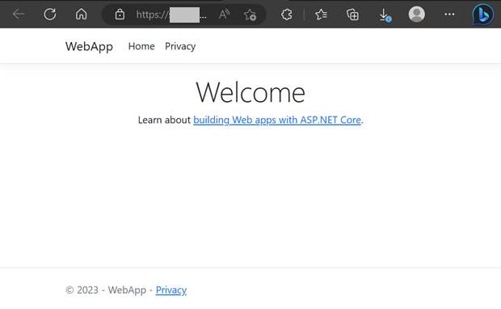
Self-Contained Deployments
Самостоятелните внедрявания се отнасят до модел на внедряване /доставка на изпълнимия файл до потребителя/, при който приложението и всичките му зависимости са обединени в един пакет. Този пакет включва .NET среда за изпълнение, библиотеки и други ресурси, необходими за изпълнение на приложението на системата на крайния потребител. Самостоятелните внедрявания са специфични за платформата и независими от инсталирания .NET на целевата машина. Този подход гарантира, че приложението може да работи на системи дори без необходимост от предварително инсталирана .NET платформа, което улеснява разпространението и внедряването на .NET приложения за различни операционни системи.
$ dotnet publish -c Release -r win10-x64 $ dotnet publish -c Release -r osx.10.11-x64 $ dotnet publish -c Release -r ubuntu-x64
След изпълнението на тези команди, необходимите файлове за публикуване могат да бъдат намерени в директориите Release/[win10-x64|osx.10.11-x64|ubuntu-x64]/publish.
Ключови думи в езика C#
Ключовите думи са запазени думи в езика, и не могат да бъдат използвани за друго, освен като ключови думи; тоест имената на класовете, обектите, методите, променливите трябва да са различни. Това са думите от следния спсък:
abstract as base bool break byte case catch char checked class const continue decimal default delegate do double else enum event explicit extern false finally fixed float for foreach goto if implicit in int interface internal is lock long namespace new null object operator out override params private protected public readonly ref return sbyte sealed short sizeof stackalloc static string struct switch this throw true try typeof uint ulong unchecked unsafe ushort using virtual void volatile while
Задачи
1. Направете си акаунт в gbithub: https://github.com/signup
2. Влезте в акаунта си, и създайте ново Repository /сорс-код на проект/ https://github.com/new, именовайте го csharp, или както желаете. Качете празен файл file.txt, създаден с Notepad на вашия Desktop.
3. Отидете на Codespaces : https://github.com/codespaces
4. Изберете Repository ➜ вашето Repository, от 1а, Дайте Create
5. Върнете се в Codespaces / https://github.com/codespaces
6. Отидете в Owned by - вашето потребителско име - под него е новия шаблон /template/, изберете ... в дясно от него, дайте Rename, и го преименувайте на csharp
7. Щракнете въху csharp - ляв бутон.
8. В ляво изберете квадратчето Extensions, в търсачката Extension Marketplace въведете C#, и изберете C# for Visual Studio Code (powered by OmniSharp).
9. Натиснете бутона [Install]
10. От менюто ≡ горе ляво, изберете Terminal/New terminal
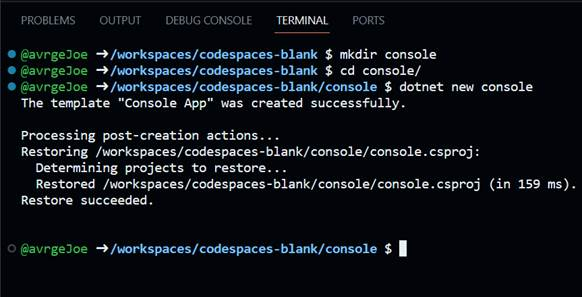
Забележка: В терминала можете да пишете следните команди /както и много други/:
mkdir hold ➜ създава дирекрория hold; ls -la ➜ показва списък с файловете и директориите в текущата директория cd hold ➜ влиза в директория hold cd .. ➜ излиза от текущата директория, във външната rm -rf hold ➜ изтрива директория hold и директориите и файловете в нея; rm - remove, + r-recursive + f-files ➜ rm -rf
Изпълнете:
@404joe ➜ /workspaces/codespaces-blank $ mkdir hold @404joe ➜ /workspaces/codespaces-blank $ ls -la
Резултат:
total 12 drwxrwxrwx+ 3 codespace root 4096 May 12 19:13 . drwxr-xrwx+ 5 codespace root 4096 May 12 18:59 .. drwxrwxrwx+ 2 codespace codespace 4096 May 12 19:13 hold @404joe ➜/workspaces/codespaces-blank $
11. Влезте в hold /cd hold/
@404joe ➜/workspaces/codespaces-blank $ cd hold @404joe ➜/workspaces/codespaces-blank/hold $ ls -la
Резултат:
total 8 drwxrwxrwx+ 2 codespace codespace 4096 May 14 14:58 . drwxrwxrwx+ 7 codespace root 4096 May 14 14:58 .. @404joe ➜/workspaces/codespaces-blank/hold $
12. Във hold изпълнете dotnet new console:
@404joe ➜/workspaces/codespaces-blank/hold $ dotnet new console
Резултат:
The template "Console App" was created successfully. Processing post-creation actions... Restoring /workspaces/codespaces-blank/hold/hold.csproj: Determining projects to restore... Restored /workspaces/codespaces-blank/hold/hold.csproj (in 117 ms). Restore succeeded. @404joe ➜/workspaces/codespaces-blank/hold $
Създават се файловете Program.cs - файла с прогртамата, hold.csproj - файла на проекта, директория obj
@404joe ➜/workspaces/codespaces-blank/hold $ ls -la
Резултат:
total 20 drwxrwxrwx+ 3 codespace codespace 4096 May 14 15:00 . drwxrwxrwx+ 7 codespace root 4096 May 14 14:58 .. -rw-rw-rw- 1 codespace codespace 105 May 14 15:00 Program.cs -rw-rw-rw- 1 codespace codespace 249 May 14 15:00 hold.csproj drwxrwxrwx+ 2 codespace codespace 4096 May 14 15:00 obj @404joe ➜/workspaces/codespaces-blank/hold $
13. горе в ляво, се появяват въпросните файлове:
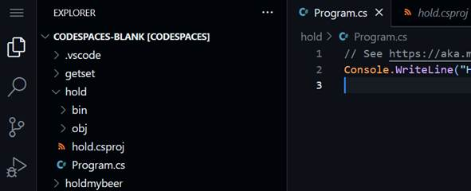
14. обратно в терминала компилирате проекта:
@404joe ➜/workspaces/codespaces-blank/hold $ dotnet build
Резултат:
MSBuild version 17.5.1+f6fdcf537 for .NET
Determining projects to restore...
All projects are up-to-date for restore.
hold ➜ /workspaces/codespaces-blank/hold/bin/Debug/net7.0/hold.dll
Build succeeded.
0 Warning(s)
0 Error(s)
Time Elapsed 00:00:05.21
@404joe ➜/workspaces/codespaces-blank/hold $
15. dotnet run за да го стартирате
@404joe ➜/workspaces/codespaces-blank/hold $ dotnet run
Hello, World!<- Резултат от изпълнението на програмата
@404joe ➜ /workspaces/codespaces-blank/hold $
16. Може да заместите съдържанието на файла Program.cs със следното:
using System;
namespace MyApplication
{
class Program
{
static void Main(string[] args)
{
Console.WriteLine("Hold my beer!");
}
}
}
// Резултат:
// Hold my beer!
17. dotnet run ➜ в терминала, за да прекомпилирате, и стартирате с една команда.
dotnet build - създава hold.dll /dyamic link library/, за да създатете .exe /executable/, използвайте:
dotnet publish -c Release -r win-x64
Резултата е в /workspaces/codespaces-blank/hold/bin/net7.0/win-x64/publish/hold.exe
в лявата част на екрана:
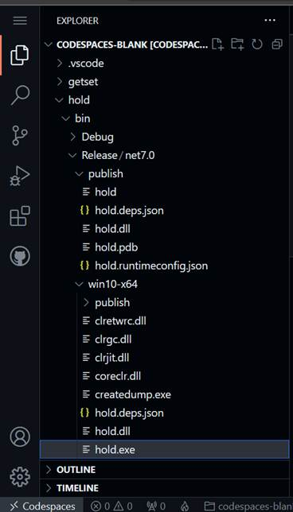
Този изпълним .exe файл може да бъде изтеглен на локалния ви компютър и изпълнен локално /изтеглете чрез десн бутон въху директорията win10-x64 на hold.exe файла ➜ download/.
Други полезни команди:
pwd ➜ показва пътя до текущата директория cat Program.cs ➜ Отпечатва съдържанието на Program.cs в терминала; cat Pro[+tab⇆] ➜ cat Program.cs ➜ автоматично довършва името на файла който започва с Pro [ctrl] + l ➜ за да се почисти терминала [ctrl] + c ➜ за да се прекъсне процес ↑ или ↓ ➜ предишни команди [ctrl] + [space] ➜ Автоматично довършване на командата в Редактора /Погледнете следващото изображение/
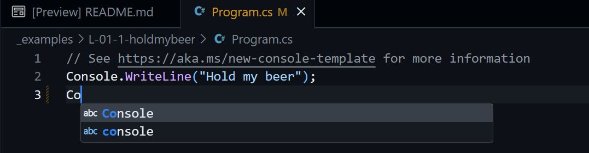
!!! Имената на файловете и директориите са чуствителни към малка и голяма буква, файла Program.cs е различен от файла program.cs !!!
@404joe $ grep -rnw . -e 'Main' --include \*.cs ➜ За да търсите реда, съдържащ символния низ Main във всички поддиректории на текущата директория ( . ), във всички файлове с разширението .cs показва реда (7), ако търсеният низ бъде намерен:
@404joe➜/workspaces/codespaces-blank/hold $ grep -rnw . -e 'Main' --include \*.cs
Резултат:
./Program.cs:7: static void Main(string[] args)
@404joe➜/workspaces/codespaces-blank/hold $
18. Примерите към курса може да разгледате на този линк.
II. Променливи
Коментар.
В C# двойната наклонена черта (//) се използва за обозначаване на коментар от един ред. Всичко, написано след // на същия ред, се счита за коментар и се игнорира от компилатора. Коментарите се използват за добавяне на обяснителен или описателен текст в кода, така че разработчиците да разберат по-добре кода. Те не се изпълняват като част от програмата.
Ето няколко примера за едноредови коментари:
// Това е коментар int x = 10; // Декларация на променлива с име x от тип int, // инициализирана със стойност 10 int sum = x + 5; // Изчисляване на променливата sum; // стойността на sum е: 15 /10+5/
Едноредовите коментари са ограничени до един ред код. Ако трябва да добавите коментар, който обхваща няколко реда, можете да използвате /*многоредов коментар*/ :
/* Това е многоредов коментар. Може да обхваща няколко реда. Този и горните 2 реда са многредов коментар. */
Типове данни
Целочислени типове - Естествени цели числа
byte: Представлява 8-битово цяло число без знак със стойности в диапазона от 0 до 255.
int: Представлява 32-битово цяло число със знак със стойности, вариращи от -2,147,483,648 до 2,147,483,647. Пример: int x = 10;
Дробни числа
float: Представлява число с плаваща запетая с единична точност /32 бита/ с приблизително 7 цифри точност. Пример: float pi = 3.14;
double: Представлява число с плаваща запетая с двойна точност /64 бита/ с приблизително 15-16 цифри на точност.
decimal: Представлява десетично число с плаваща запетая с висока точност и широк диапазон от стойности. Често се използва за финансови и парични изчисления, които изискват точно десетично представяне.
Знакови типове
char: Представлява един Unicode знак : 'а', 'в' , 'w', '7', '$', '#' - може да бъде всеки знак наличен на клавиатурата,напр: char ch = '№';
string: Представлява последователност от знаци /char/ и се използва за съхраняване и манипулиране на текст в C# - например: string s = "Hold my beer";
Булев тип
bool: Представлява логическа булева стойност, която може да бъде true /истина/ или false /лъжа/. Обикновено се използва за логически операции и логически изрази в C#.
Тези типове представят различни видове данни за съхраняване и работа, като цели числа, числа с плаваща запетая, знаци и текст.
Виждал съм, ама няма /void/
void - без указан тип; функции /по-соро един вид процедури/ декларирани като void не връщат резултат/стойност с return.
var - Ключовата дума var в C# се използва за деклариране на променливи, без да се задава специфичен тип. Компилатора автоматично определя типа въз основа на стойността, присвоена на променливата, и типа не може да се променя - примерно не можете първо да присвоите число, а след това да въведете низ. Задължително трябва да бъде инициализирана при декларацията си: var myString = "Hold my beer";
Декларация на променлива
Декларацията на променлива се състои в следното:
тип_на_променлива име_на_променлива;
тип_на_променлива - валиден за езика c# тип: byte, int, float, double, decimal, char, string, bool ... други типове на c# /или класове, валидни за проекта/;
име_на_променлива - не трябва да започва с цифра, да съдържа интервал, или да е резервирана в езика ключова дума;
Декларацията на променлива е подобно на полагането в математиката, след като напишете " полагаме z = x ", може да ползвате z на следващите редове.
Обхват на променлива
В C# обхватът на локална променлива се определя от блока, в който е декларирана. Локална променлива може да бъде достъпна само в рамките на блока, където е дефинирана, включително всички вложени блокове в нея. След като се излезе от блока, локалната променлива излиза извън обхвата и вече не е достъпна. Ето един пример за илюстриране на обхвата на променливата:
void MyFunction() { // начало на блок в който е декларирана x int x = 10; //Локална променлива 'x', декларирана във функцията if (x > 5) { // начало на блок в който е декларирана y int y = 20; // Локална променлива 'y', декларирана в блока if Console.WriteLine(x); // Достъпна: 'x' е в обхват Console.WriteLine(y); // Достъпна: 'y' е в обхват } // край на блок в който е декларирана y Console.WriteLine(x); // Достъпна: 'x' е в обхват Console.WriteLine(y); // ГРЕШКА: 'y' е извън обхвата } // край на блок в който е декларирана x
В горния пример променливата x е достъпна в цялата функция, защото е декларирана във външния блок. Променливата y обаче е достъпна само в рамките на { блока } if, защото е декларирана във него. След като излезете от блока if, променливата y излиза извън обхвата и вече не е достъпна.
Важно е да се отбележи, че променливи с едно и също име могат да бъдат декларирани в различни блокове и те ще имат отделни обхвати. Всеки блок създава нов обхват за променливите, декларирани в него.
Локални променливи със същото име не могат да бъдат декларирани два пъти в един и същ обхват. Например, не можете да направите това:
int x = 20;
// ... код ... ;
x = 30; // OK, x присвоява 30
int x = 30; // не е ОК, защото има int, т. е. декларираме x отново
Ето още един пример:
int p = 20;
for (int i = 0; i < 10; i++)
{
int i = 50; // НЕ може да се прави това — i все още е в обхвата
int p = 40; // НЕ може да се прави това — p все още е в обхвата
p = 30; // това може да се прави — променяме стойността в
// променливата p, от 20 става 30
Console.WriteLine(p + i);
}
Ако се опитате да компилирате това, получавате грешка като следната:
грешка CS0136: Променлива с име "i" не може да бъде декларирана в този обхват, защото това име се използва в обхващащ локален обхват за дефиниране на локална променлива или параметър
Това се случва, защото променливата i, е дефинирана преди началото на for оператора, все още е в обхвата на for и няма да излезе от обхвата, докато оператора for не приключи изпълнение. Компилаторът няма начин да направи разлика между тези две променливи, така че няма да позволи втората да бъде декларирана.
Константи
В C# константата е стойност, която не може да се променя по време на изпълнение на програма. Тя се декларира с помощта на ключовата дума const и трябва да и бъде присвоена стойност по време на декларирането. Ето някои ключови точки относно константите:
• Декларация на константа: Константите се декларират с помощта на ключовата дума const, последвана от типа данни и името на константата. Например: const int MAX_VALUE = 100;.
• Присвояване на стойност: на константите трябва да бъде присвоена стойност по време на декларирането и тази стойност не може да бъде променена по-късно в програмата. Например, const double PI = 3.14159;
• Типове данни: Константите могат да бъдат декларирани с всеки валиден C# тип данни, включително числови типове, низове, знаци, булеви стойности и т.н.
• Конвенция за именуване: По конвенция имената на константите обикновено се изписват с главни букви с думи, разделени с долна черта. Например const int MAX_COUNT = 10;.
Употреба: Константите са полезни, когато имате стойност, която трябва да остане същата в цялата програма и не трябва да се променя случайно. Те могат да осигурят смислени имена на важни стойности и да подобрят четливостта на кода.
Обхват: Константите имат блоков обхват, което означава, че са достъпни само в рамките на блока код, в който са дефинирани.
Константи по време на компилиране срещу само за четене: Константите се различават от променливите само за четене /readonly/ по това, че стойностите на променливите само за четене /readonly/ могат да бъдат присвоени по време на изпълнение, докато константите се заместват с техните стойности по време на компилиране.
пример, демонстриращ използването на константи:
class Program
{
const double PI = 3.14159;
const int MAX_VALUE = 100;
static void Main()
{
Console.WriteLine($"The value of PI is: {PI}");
Console.WriteLine($"The maximum value is: {MAX_VALUE}");
}
}
// Резултат:
// The value of PI is: 3.14159
// The maximum value is: 100
В горния пример константите PI и MAX_VALUE са декларирани и използвани в рамките на метода Main. Веднъж присвоени, техните стойности не могат да бъдат променяни по време на изпълнение на програмата. Константите са полезни за предоставяне на смислени имена на важни стойности, подобряване на четимостта на кода и гарантиране, че специфичните стойности остават постоянни в цялата програма.
Забелжка: реда Console.WriteLine($"вие въведохте: {a}"); се нарича интерполация на низ. Знакът $ преди "вие въведохте: {a}", означава това, което е в {скоби} в низа да се замести със стойността на променливата, тоест {a} да се замести със стойността на променливата с име а.
Константа null
В C# нулевата константа е представена от ключовата дума null. Използва се, за да посочи липсата на стойност или че променлива от тип обект не препраща към обект. Ето няколко ключови момента относно нулевата константа:
• null не е валидна стойност за типове стойности (като int, bool и т.н.), но може да бъде присвоена на всяка променлива от референтен тип.
•Когато на променлива е присвоена стойност null, това означава, че тя не препраща към обект в паметта.
null може да се използва за различни цели, като инициализиране на променливи, указване на неинициализирано състояние или проверка за нулеви условия преди достъп до членове или извикване на методи на обекти.
Прощаване с null
Операторът ! се нарича null-forgiving оператор /оператор опрощаващ null/. Използва се за потискане на предупреждения за нулева препратка от компилатора. Ето някои важни подробности:
• Операторът за прощаване на null казва на компилатора да приеме, че израз или променлива никога няма да бъде null, дори ако статичният анализ предполага друго.
• Обозначава се с поставяне на ! след израза или променливата, като: myVariable!
Използването на оператора за опрощаване на null може да бъде полезно, когато знаете със сигурност, че дадена стойност няма никога да бъде null, но бъдете внимателни, тъй като премахва нулевите проверки за безопасност по време на компилация. Ако стойността действително се окаже null по време на изпълнение, ще бъде хвърлено изключение NullReferenceException.
Важно е да се отбележи, че използването на оператора за опрощаване на null трябва да се прави разумно и само когато сте абсолютно сигурни, че няма да се появят null стойности. Като цяло е по-добре да се осигури правилна проверка и обработка на null, за да се избегнат потенциални изключения по време на изпълнение.
Присвояване (!!! = ➜ чете се присвоява !!!)
При декларация на променлива може да й се зададе начална стойност:
int a = 10; // = ➜ оператор присвоява; чете се 'а присвоява десет' char ch = ‘№’; float pi = 3.14;
Знакът = се нарича присвоява и означава, че стойността на променливата а се задава да е числото 10.
Ако началната стойност на променливата не е зададена, тя се установява на произволно число (или произволен знак, ако променливата е тип char).
Възможно е присвояването на стойност на дадена променлива да се извърши отделно от декларирането и:
float euler; euler = 2.71;
Операции с числени променливи
В други случай променливата директно присвоява стойност, която е сума или произведение на стойности или променливи, напр.:
int a, b = 10; a = 20 + b;
След изпълнение на горното действие, стойността в променливата а е 30.
Допустими са следните Аритметични оператори в езика С#:
• + ➜ Събиране
• - ➜ Изваждане
• * ➜ Умножение
• / ➜ Деление
• % ➜ Остатък от целочислено делене (само за типа int/byte)
Посочените операции са бинарни, т.е. изискват два операнда: ляв и десен. Остатъкът от целочислено деление се прилага само върху целочислени типове.
Операции с Низове
Съединяване на 2 низа ➜ оператор + :
string str1 = "Hold"; string str2 = "my beer"; string result = str1 + " " + str2; // " " - интервал Console.WriteLine(result); // резултат: // Hold my beer
Низ1 еднакъв ли е на Низ2?
string str1 = "Hold my";
string str2 = "Beer";
if (str1 == str2)
{
Console.WriteLine("Низовете са еднакви.");
}
else
{
// изпълнява се else, защото "Hold my" различно от "Beer"
Console.WriteLine("Низовете не са еднакви.");
}
// Резултат:
// Низовете не са еднакви.
В горния пример операторът == (!!! == се нарича равно !!!) се използва за сравняване на str1 и str2. Ако низовете са равни, ще се отпечата „Низовете са еднакви“. В противен случай ще се отпечата „Низовете не са еднакви“.
Имайте предвид, че операторът == сравнява съдържанието на низовете, тоест
"Hold" == "hold" ➜ дава резултат лъжа, защото "Hold" започва с главна буква, а "hold" - не.
Ако искате да извършите сравнение без значение дали буквите са малки или главни, можете да използвате метода String.Equals със съответните параметри, по този начин:
string str1 = "Hold";
string str2 = "hold";
if (string.Equals(str1, str2, StringComparison.OrdinalIgnoreCase)) // изпълнява се
{
// за разлика от предишния пример, вече: "Hold" == "hold", защото не се
// взима предвид големината на буквите
Console.WriteLine("Низовете са еднакви. (Главна/Малка буква нечувствителни)");
}
else
{
Console.WriteLine("Низовете не са еднакви (Главна/Малка буква нечувствителни).");
}
// Резултат:
// Низовете са еднакви. (Главна/Малка буква нечувствителни)
В последния пример методът String.Equals се използва с параметъра StringComparison.OrdinalIgnoreCase за извършване на сравнение между str1 и str2 без значение дали букви са малки или големи.
Полезни методи на обектът string работа със символни низове:
str1.StartsWith: Проверява дали низът започва с определен подниз.
str1.EndsWith: Проверява дали низът завършва с определен подниз.
str1.Contains: Определя дали в низа присъства подниз.
str1.IndexOf: Връща индекса на първото срещане на определен подниз.
str1.LastIndexOf: Връща индекса на последното срещане на определен подниз.
str1.Substring: Извлича подниз въз основа на посочения начален индекс и дължина по избор.
str1.Replace: Заменя всички срещания на определен подниз с друг подниз.
str1.ToUpper: Преобразува низа в главни букви.
str1.ToLower: Преобразува низа в малки букви.
str1.Trim: Премахва интервалите от низа.
Задачи
Задачи символни низове - в следващата тема /III. Управляващи инструкции/
Копиране на репозитори от github:
Отворете Codespaces, от миналия път.
Създайте /mkdir/ директория copy, влезте в нея с cd copy
git clone https://github.com/404joe/csharp.git
за да копирате целия проект от примерите на курса
Алтернативно
curl -O https://raw.githubusercontent.com/404joe/csharp/master/_examples/L-01-1-holdmybeer/Program.cs curl -O https://raw.githubusercontent.com/404joe/csharp/master/_examples/L-01-1-holdmybeer/holdmybeer.csproj
за да копирате само 2-та файла от проекта hello
Изпълнете:
$dotnet build
$dotnet run
Четене на променлива тип int /цяло число/ от конзолата в променливата а:
Console.WriteLine("Enter a = ");
int a = int.Parse(Console.ReadLine());
// или следното за дробно число
Console.WriteLine("Enter a = ");
double a = double.Parse(Console.ReadLine());
Задачи Променливи
1. Напишете програма, която приема две цели числа a и b от потребителя и извежда тяхната сума, разлика и произведение.
2. Напишете програма, която взема температура в Целзий и я преобразува във Фаренхайт. Формулата за преобразуване е:
TF = ( TC * 9/5) + 32
където: TF - Tемпература във Фаренхайт /изчислява се и се извежда на екрана/; TC - Tемпература в Целзий /въвежда се от терминала/
3. Да се напише програма за определяне на:
• периметъра на триъгълник, при въведени дължини на страните a, b и c.
• лицето на триъгълник, при въведена дължина на една от страните a и височина към нея h.
• лицето чрез Хероновата формула: s = sqrt( p * ( p - a ) * ( p - b) * ( p - c ) ); p = ( a + b + c ) / 2.
Упътване: функцията Math.Sqrt(number); - корен квадратен, примерно Math.Sqrt(16) ➜ 4;
4. Да се напише програма, която изчислява обема на триъгълна пирамида по формулата: v = s*h*1/3, като от клавиатурата се въвеждат:
• лицето на основата s и височината h на пирамидата;
• дължината на страните на основата a, b и c /в случая s се изчислява по Хероновата формула от задача 3/ и височината h на пирамидата
5. Да се напише програма за изчисляване на разстоянието между две точки с дадени координати A(x1, y1) и B(x2, y2). Въвеждат се x1, y1, x2, y2
6. Да се напише програма, в която се въвеждат:
• две числа
• три числа
а тя извежда стойността на най–голямото от тях .
Упътване: Math.Max(5, 8) ➜ резултат: 8
7. Да се напише програма, в която се въвежда ъгъл в градуси, а тя отпечатва неговия синус.
Упътване:
double degrees = 45.0; double radians = degrees * (Math.PI / 180.0); double sine = Math.Sin(radians); Console.WriteLine(sine);
8. Имате банкноти по 1$, 2$, 5$ в неограничено количество. Да се напише програма, която да разпределя въведена от клавиатурата сума така, че да се състои от най-малко количество банкноти.
III. Управляващи инструкции: if × for
УПРАВЛЕНИЕ НА ПОТОКА НА ИЗПЪЛНЕНИЕ НА ПРОГРАМАТА
Този раздел разглежда изразите, които ви позволяват да контролирате потока на изпълнение на вашата програма. С оператор за условен преход - изрази като операторите if и switch, можете да разклоните кода си в зависимост от това дали определени условия са изпълнени. Можете да повтаряте изрази с оператори for, while и foreach.
Логически изрази
Логическите изрази са съставени от променливи или стойности, свързани по между си с логически оператори. Логическите изрази в информатиката дават като резултат една от две възможни стойности: истина-true (в езика С съответства на число различно от нула, едно по подразбиране) или лъжа-false (в езика С съответства на числото нула). Бинарните логически оператори работят върху две стойности, докато унарните (само оператор not) работи само върху една стойност. Логическите оператори са следните:
! (NOT) оператор: Той инвертира логическата стойност на израз. Ако имаме израз който е true, то ! го прави false; ако изразът е false то ! го прави го true.
bool а = true;
bool b = !a; // b == false;
&& (AND) оператор: Той изпълнява логическа операция И между два израза. Връща true, ако и двата израза са true, и false в противен случай.
|| (ИЛИ) оператор: Той изпълнява логическа операция ИЛИ между два израза. Връща true, ако поне един от изразите е true, и false, ако и двата израза са false.
^ (XOR) оператор: Той изпълнява логическа операция XOR (изключващо ИЛИ) между два израза. Връща true, ако изразите имат различни логически стойности (единият е true, а другият е false) и false, ако изразите имат една и съща логическа стойност (и двата true или и двата false).
Логически оператори за отношение:
При конструиране на логически изрази, когато е необходимо да се сравняват стойности или стойности на променливи от числен тип се използват оператори за отношение в езика С, резултатът от изпълнението на които също е true или false:
a == b връща true, ако a e Равно на b
a != b връща true, ако a e Различно от b
a > b връща true, ако a e По-голямо от b
a < b връща true, ако a e По-малко от b
a >= b връща true, ако a e По-голямо или равно на b
a <= b връща true, ако a e По-малко или равно на b
Опертатор if
Операторът if ви позволява да изпълните условно блок от код, ако даден логически израз е изпълнен /със стойност true /.
if (логически_израз) { изпълнва се ако логически_израз е със стойност true }
Например:
int a = -120; //минус 120
if (a > 0)
{
// Кода се изпълнява ако а е положително, в случая не се изпълнява,
// защото а == -120,
// логически_израз: a > 0 ➜ -120 > 0 ➜ false
}
Операторът if-else:
if/else оператор - разширява if оператора, като предоставя алтернативен блок от код за изпълнение, ако условието е false /стойност false/. Позволява ви да управлявате два различни случая. Например:
a = -120; // минус 120
if (a > 0)
{
// не се изпълнява, защото а == -120,
// логически_израз: a > 0 ➜ -120 > 0 ➜ false
}
else
{
// изпълнява се само когато а > 0 е със стойност false
// логически_израз: a > 0 ➜ -120 > 0 ➜ false
// следователно ще се изпълни, защото а > 0 не се изпълнява,
// тоест, когато а < 0 или а ==0
}
if / else if / ... / else if / else оператор: този оператор ви позволява да обработвате множество логически_изрази последователно. Всеки логически израз се оценява един по един и съответният блок от код се изпълнява за първия логически_израз, който се оцени като true. Ако нито един от логическите израз с if не е изпълнен (логически_изрази == false), блокът else се изпълнява като резервен вариант. Например:
int a = -120; if (a > 0) { // {блок №1 на if} // не се изпълнява, защото а == -120; а > 0 ➜-120 > 0 ➜ false Console.WriteLine("а е положително число"); } else if (a == 0 ) { // {блок №2 на if} // не се изпълнява, защото а == -120; а == 0 ➜ -120 == 0 ➜ false Console.WriteLine("а е нула"); } else { // {блок else на if} // изпълнява се, защото а == -120; и нито а > 0 е изпълнено; нито а == 0 е изпълнено // следователно не е необходима и проверка за а < 0, защото, ако не е нула и не // е положително, остава да бъде отрицателно Console.WriteLine("а е отрицателно число"); } // Резултат: // а е отрицателно число
Важно: В конструкциите if(...) { действие1; действие2; }, скобите {} могат да бъдат изпуснати, но само когато в тях има само едно действие: { действие1; } <- само една ; в {}. Тогава записа става : if(...) действие1;
Съкратен оператор за условен преход /тринарен оператор/
Съкратения оператор за условен преход, който до известна степен замества операторът if и е удобен в някои случаи, като например при проверка на стойностите на променливи:
Променлива = (логически_израз) ? стойност която се връща ако логически_израз е true
: стойност която се връща ако логически_израз е false;
Пример:
int a; а = 5 > 3 ? 10 : 20; // a == 10
Стойността на а след изпълнение на горния ред е 10, защото 5 винаги е по–голямо от 3 (true), следователно се връща първата стойност (10). При алтернативното:
int a; а = 5 < 3 ? 10 : 20; // a == 20
стойността на а става 20. Числата в горните два примера могат да бъдат заместени и от променливи.
Оператор switch
Подобно на оператора if, този оператор служи за избор на един от няколко възможни варианта. Синтаксисът му може да бъде показан от следния пример: Да се напише програма, в която се въвежда цяло число в интервала [1, 7 ], а програмата извежда обратно съответен ден от седмицата.
int day = 3;
switch ( day )
{
case 1 : Console.WriteLine("понеделник"); break;
case 2 : Console.WriteLine("вторник"); break;
case 3 : Console.WriteLine("сряда"); break;
case 4 : Console.WriteLine("четвъртък"); break;
case 5 : Console.WriteLine("петък"); break;
case 6 : Console.WriteLine("събота"); break;
case 7 : Console.WriteLine("неделя"); break;
default : Console.WriteLine(" числото не е в интервала [1, 7 ]"); break;
}
// Резултат:
// сряда // защото променливата day == 3
switch е ключова дума, а променливата която е в кръглите скоби може да е и от тип char (или int - цяло число).
Изпълнението му протича по следния начин: Последователно се проверява дали стойността на променливата (в кръглите скоби) съвпада със стойностите на константите (или променливите) след клаузите case. В случай на съвпадение се изпълнява съответната последователност от инструкции (в случая да се отпечата съответния ден от седмицата ). Командата break предизвиква прекъсване изпълнението на инструкцията switch, при което изпълнението се прехвърля след затварящата фигурна скоба } на оператора switch. Клаузата default не е задължителна. Ако я има, тя се изпълнява при условие, че стойността на израза не съвпада с нито една от изброените след case стойности (или променливи).
Програма, в която се въвежда число (от 1 до 12) – номер на месец, а програмата показва в кой сезон попада:
int month = 5;
switch(month)
{
case 12 : case 1 : case 2 : Console.WriteLine(" Зима "); break;
case 3 : case 4 : case 5 : Console.WriteLine(" Пролет "); break;
case 6 : case 7 : case 8 : Console.WriteLine(" Лято "); break;
case 9 : case 10 : case 11 : Console.WriteLine(" Есен "); break;
default : Console.WriteLine<<"Въведения месец не е в интервала [1, 12] "; break;
}
// Резултат:
// Пролет
Kонструкцията
case 3: case 4: case 5: Console.WriteLine(" Пролет "); break;
се тълкува от компютъра като: Ако променливата month е 3, или е 4, или е 5 : отпечатай – Пролет.
Оператор for
C# предоставя четири различни оператора (for, while, do-while и foreach), които ви позволяват да изпълните блок от код многократно, докато не бъде определен логически_израз върне false. С ключовата дума for преминавате през оператор, чрез който тествате дали логически_израз е true, преди да извършите друга итерация:
for (int i = 0; i < 100; i++) { Console.Write(i + " # "); // този ред се повтаря 100 пъти, при първото изпълнение // i == 0 /начална стойност/; при второто i == 1; ... // при последното изпълнение i == 99, // след i++ ➜ i == 100, логическия // израз става 100 < 100 ➜ false ➜ // изпълнението спира } // Резултат: // 0 # 1 # 2 # 3 # 4 # 5 # 6 # 7 # 8 # 9 # 10 # 11 # 12 # 13 # 14 # 15 # 16 # 17 # // 18 # 19 # 20 # 21 # 22 # 23 # 24 # 25 # 26 # 27 # 28 # 29 # 30 # 31 # 32 # 33 # // 34 # 35 # 36 # 37 # 38 # 39 # 40 # 41 # 42 # 43 # 44 # 45 # 46 # 47 # 48 # 49 # // 50 # 51 # 52 # 53 # 54 # 55 # 56 # 57 # 58 # 59 # 60 # 61 # 62 # 63 # 64 # 65 # // 66 # 67 # 68 # 69 # 70 # 71 # 72 # 73 # 74 # 75 # 76 # 77 # 78 # 79 # 80 # 81 # // 82 # 83 # 84 # 85 # 86 # 87 # 88 # 89 # 90 # 91 # 92 # 93 # 94 # 95 # 96 # 97 # // 98 # 99 #
Първият израз на оператора for е инициализаторът. Оценява се преди да се изпълни първото изпълнение. Обикновено се инициализира локална променлива като брояч.
Вторият израз е логически_израз_за_изход. Проверява се преди всяка изпълнение на блока for. Ако този израз се оцени като true, блокът се изпълнява. Ако се оцени като false, операторът for завършва и програмата продължава със следващия оператор след затварящата фигурна скоба на блока на for ➜ след скобата } .
След като блока се изпълни, третият израз, итераторът, се изпълнява. Обикновено увеличавате брояча на оператора. Чрез i++ числото 1 се добавя към променливата i. i++ ⟷ i = i + 1 ⟷ i += 1; Респективно, i += 10 увеличава i с 10. След третия израз се изчислява логически_израз_за_изход отново, за да се провери дали трябва да се направи ново изпълнение на блока for.
Оператора for е с предусловие, тъй като логически_израз_за_изход се оценява преди изпълнението; следователно { съдържанието } на / for () { ... съдържание ... } / изобщо няма да бъде изпълнено, ако логическият израз е със стойност false.
Може да се влагат for оператори, така че вътрешният оператор да се изпълнява веднъж напълно за всяка итерация на външен оператор. Този подход обикновено се използва за преминаване през всеки елемент в правоъгълен двумерен масив. Най-външният оператор for преминава през всеки ред, а вътрешният оператор for преминава през всяка колона в определения ред. Следният код показва редове от числа. Той също така използва друг метод на конзолата, Console.Write, който прави същото като Console.WriteLine, но не връща каретка към началото на реда:
for (int p = 0; p < 10; p++)
{
for (int q = 0; q < 10; q++)
{
int num = (p * 10) + q;
Console.Write($"{num:D2} "); // :D2 - Отпечатва числото с
// водещи нули, ако е необходимо
// Забавяне на изпълнението с
// 0.2 секунди - 200 милисекунди,
// за да се получи нещо като анимация
Thread.Sleep(200);
}
Console.WriteLine();
}
След около 20 секунди /0.2 сек. × 10 × 10 ➜ 20 сек. / Това ще доведе до следния резултат:
00 01 02 03 04 05 06 07 08 09 10 11 12 13 14 15 16 17 18 19 20 21 22 23 24 25 26 27 28 29 30 31 32 33 34 35 36 37 38 39 40 41 42 43 44 45 46 47 48 49 50 51 52 53 54 55 56 57 58 59 60 61 62 63 64 65 66 67 68 69 70 71 72 73 74 75 76 77 78 79 80 81 82 83 84 85 86 87 88 89 90 91 92 93 94 95 96 97 98 99
Всяко число се показва с две цифри / спецификатор :D2 / , което гарантира, че числата под 10 имат водеща нула.
Console.Write и Console.WriteLine
Разликата между Console.Write и Console.WriteLine е следната:
Console.Write('а');
Console.Write('а');
Console.Write('а');
// резултат:
// aaa
При WriteLine:
Console.WriteLine('а');
Console.WriteLine('а');
Console.WriteLine('а');
// резултат:
// а
// а
// а
- тоест Console.WriteLine('а'); поставя знак за нов ред / "\r\n" / след 'а', а Console.Write('а'); не поставя.
операторът while
Подобно на оператора for, while е оператор с предусловие. Синтаксисът е подобен:
int i = 0; while (i<100) { // ... команди ... i++; }
За разлика от оператора for, операторът while най-често се използва за повтаряне на оператор или блок от оператори /...команди.../ за определен брой пъти, които не са известни преди началото на оператора.
операторът do-while е с постусловие. Това означава, че логически_израз_за_изход на оператора се оценява след като { блока } на оператора е изпълнено. Следователно операторите do-while са полезни за ситуации в които блок от изрази трябва да бъде изпълнен поне веднъж, както в този пример:
int state = 1000; do { // Този оператор ще се изпълни поне веднъж, дори ако логическият_израз е със стойност false. // Ще се изпълни 1 път; state ++; // state == 1001 } while (state<100); // 1001 < 100 ➜ false ➜ // изпълнението продължава от следващия ред Console.WriteLine($"state is: {state}"); // Резултат: // state is: 1001
операторът foreach
foreach от следния код, ако приемете, че intArray е масив от тип int:
foreach (int variabl in intArray)
{
Console.WriteLine(variabl);
}
Оператори за прекъсване break и continue
Пример който илюстрира приложението на операторите за прекъсване на итеративен оператор break и техника за използване на безкраен итеративен оператор са представени в следната задача: Да се направи програма, в която се въвежда число, а тя го извежда обратно на екрана, докато се въведе числото 0:
int a;
do
{
Console.WriteLine(" въведете число; въведете 0 за край");
a = int.Parse(Console.ReadLine());
if ( a == 0 )
{
break; // прекъсва while, ако се въведе 0 за а
}
Console.WriteLine($"вие въведохте: {a}");
} while ( true ); // true – логически израз, винаги със стойност true
// Резултат:
// въведете число; въведете 0 за край
// 5
// вие въведохте: 5
// въведете число; въведете 0 за край
// 6
// вие въведохте: 6
// въведете число; въведете 0 за край
// 0
Решението на задачата може да бъде реализирано и чрез оператора за прескачане към следващата итерация continue:
int a; while ( true ) // { блок на while, повтаря се до безкрайност } { Console.WriteLine("въведете число; въведете 0 за край"); a = int.Parse(Console.ReadLine()); if ( a != 0 ) { // ако е въведено 0 за а, не се // изпълняват действията в скобите { ... } Console.WriteLine($" вие въведохте: {a}"); continue; // преминава към сл. итерация, // т. е. Console.WriteLine("въведете... } break; // прекъсва while, ако a == 0, защото if (a!=0) не се изпълнява, // тоест не се изпълнява continue. } // Резултат: въведете число; въведете 0 за край 5 вие въведохте: 5 въведете число; въведете 0 за край 6 вие въведохте: 6 въведете число; въведете 0 за край 0
Побитови оператори
Ето кратко резюме на побитовите оператори в C#:
бит - единица за информация имаща стойност 1 /true/ или 0 /false/
<< (преместване наляво): Измества битовете на число наляво с определен брой позиции. числото 4, записано двоично е 00000100. 00000100 << 2 ще доведе до 00010000. 00010000 = 16 (десетично). << е много полезен за умножение по 2 /или намиране на степени на 2/, тъй като всеки път, когато двоичното число се измества наляво 1 позиция, числената му стойност се удвоява.
Например 4 << 3 = 32, защото 4 << 3 ⟷ 8 << 2 ⟷ 16 << 1 = 32;
Еквивалентно на 4 × (2^3) = 32;
>> (преместване надясно): Измества битовете на число надясно с определен брой позиции. Всяко преместване на дясно дели числото на 2. Например:
00100000 (32 десетично) >> 2 = 00001000 (8 десетично), или:
32 >> 2 = 16 >> 1 = 8.
| (побитово ИЛИ): Извършва побитова операция ИЛИ върху две числа, като задава всеки получен бит на 1, ако поне един от съответните битове е 1.
& (побитово И): Извършва побитова операция И върху две числа, като задава всеки получен бит на 1 само ако и двата съответстващи бита са 1.
^ (побитово XOR): Извършва побитова операция XOR (изключително ИЛИ) върху две числа, като за всеки получен бит се задава 1, ако съответните битове са различни.
Тези оператори работят върху отделни битове от двоични представяния на числа и често се използват за битова манипулация на ниско ниво или специфични сценарии, изискващи побитови операции.
Относно побитовите оператори ИЛИ /OR/, Изключващо ИЛИ /XOR/, И /&/ - те могат да се използват за установяване на отделни битове или за прочитане на отделни битове. Битовете са номерирани от дясно наляво, като най-десния бит е на позиция 0. Пример: Позиция 0: 00000100;Позиция 4: 00000100; Позиция 7: 00000100. По надолу има примери как се използват:
задача 1: Число: 00000100. прочетете бит 2 - Ако е установен на 1 да се върне true, false ако не е? Решение За да прочетем стойността на бит 2 в числото 00000100, изместваме позицията на числото 2 надясно с помощта на оператора >> и изпълняваме побитово И с 00000001 (десетично 1, нарича се още маска). Ако резултатът е 1, битът е установен на 1; ако резултатът е 0, битът не е установен и резултата е false:
int number = 0b00000100; bool isBitTrue = ((number >> 2) & 1) == 1; // isBitTrue ➜ true
Променливата isBitTrue ще бъде true, защото битът на позиция 2 в числото 00000100 е 1.
задача 2: Число: 00000100. Установете бит 2 на 0. Решение
За да отменим (зададем на 0) бит 2 в числото 00000100, можем да използваме побитовия оператор И (&) с битова маска, която има 0 в бит 2 и 1 навсякъде другаде /11111011/.
int number = 0b00000100; int bitMask = ~(1 << 2); int result = number & bitMask;
Стойността на result ще бъде 0b00000000, което означава, че битът на позиция 2 е изчистен /зададен на 0/.
задача 3: Число: 00000100. Установете бит 4 на 1. Решение
За да установим (зададем на 1) бит 4 в числото 00000100, можем да използваме побитовия оператор ИЛИ (|) с битова маска, която има 1 в бит 4 и 0 навсякъде другаде.
int number = 0b00000100; int bitMask = 1 << 4; int result = number | bitMask;
Стойността на резултата ще бъде 0b00010100, което означава, че битът на позиция 4 е установен на 1.
Функции
Функция в програмирането е код, който извършва някаква дейност, и връща резултат, например:
int add(int a, int b)
{
return a+b; // връщане на резултат /сумата
// на a и b/ от работата на кода
}
Функцията се извиква чрез нейното име, например : add(10, 15) - > резултата 25 като число се поставя на мястото от където е извикана функцията; може да се извика по следния начин:
int c = add(15, add(10, 10)); // в променливата c се записва числото 35.
В c# се наричат методи, но това по същество са вид функции.
Функция Main - Функцията Main е входна точка за всяка програма; от нея започва изпълнението на програмата. Когато програмата се стартира от потребителя, операционната система извиква 1 път функцията Main.
Рекурсия- когато дадена функция извиква сама себе си. При това се получава нещо подобно на итеративен оператор, който има нужда от логически_израз за изход, иначе се повтаря безкрайно:
public class Program
{
public static void Main()
{
Console.WriteLine("Hold my beer");
Main(); // Извикваме функцията Main,
// която извиква себе си,
// отново и отново до безкрайност
}
}
Ето пример за рекурсивна функция в C# за изчисляване на сумата от числа от 1 до 100 /1+2+3+...+99+100/:
public static int SumR(int n) { if (n == 1) { // ако n стигнало до 1, се прекратява // изпълнението; логически_израз за изход return 1; } else { // ако n > 1, се връща текущата // стойност на n + SumR(n - 1); return n + SumR(n - 1); } } // Употреба на рекурсивна функция : int result = SumR(100); Console.WriteLine(result); // Резултат: 5050
В този пример функцията SumR приема цяло число n като вход и рекурсивно изчислява сумата на числата от n до 1. логическият_израз за изход е n да стане равно на 1, тогава функцията връща 1. В противен случай тя добавя n към резултата и рекурсивно извиква себе си с параметър n-1. Накрая извикваме функцията SumR със 100 като вход и отпечатваме резултата.
Същата задача, решена с оператор for:
public static int SumF(int n) { int sum = 0; for (int i = n; i >= 1; i--) { sum += i; // еквивалентно на sum = sum + i: добавяме i към sum } return sum; } // Употреба на for версията /без рекурсия/: int result = SumF(100); Console.WriteLine(result); // Резултат: 5050
В тази версия инициализираме променливата sum с 0 и използваме for оператор за итерация от 100 до 1 (включително). for /това, което е в скобите { ... }/ се повтаря в низходящ ред и при всяко повторение стойността на i се добавя към променливата sum, след което сойността на i се намалява с 1. Накрая се връща изчислената сума чрез return. Това постига същия резултат като рекурсивната версия, но без използване на рекурсия.
Задачи
Задачи Логически изрази
1. Какъв е резултатът от следната операция : ! (a && 1) при а = 0 ?
2. Какъв е резултатът от следната операция : ( ( a <= b ) || ( c > d ) ) при a = 5, b = 7 , c = 4, d = 3?
3. Какъв е резултатът от следната операция : !( (a > b )&&(a ! = c) ), при:
• a=1; b=2; c=3 ?
• a=3; b=2; c=1 ?
4. Да се напише логически израз относно а и b, който:
•връща true, ако а е в интервала [-3;2] и b е в интервала [5;7]
•връща false, ако а е в интервала [5;7] или b е в интервала [-3;2]
5. Да се напише логически израз, който връща true, ако точката А ( x, y) попада в окръжността О с радиус R и център C ( a, b)
6. Да се напише логически израз, който връща true, ако точката А ( x, y) попада в правоъгълника ABCD с център O ( p, q) и страни a и b.
7. Да се напише логически израз, който връща true, ако точката А ( x, y, z ) попада в сфера с център О ( p, q, r) и радиус R.
Задачи оператори if и switch
1. Да се напише програма, в която от клавиатурата се въвежда цяло число и програмата определя дали то е четно или нечетно. Упътване: да се използва оператора % за остатък от целочислено делене.
2. Да се напише програма, в която се въвеждат координатите на две точки А(x1, y1) и В (x2, y2) от равнината и програмата определя дали и двете лежат в квадрант I
3. Да се напише програма, при която от клавиатурата се въвежда цяло число [1, 19], а програмата го извежда с:
• текст
• римски цифри
4. Осите на правоъгълна координатна система в равнината я разделят на 4 квадранта, номерирани от 1 до 4. Координатите са целочислени. Да се състави програма, в която се въвеждат стойности X и Y (координати на точка) и след това програмата дава съобщение в кои квадранти се намира точката.
5. Напишете програма, която приема два низа от потребителя и извежда дали са еднакви или не. Упътване: Ползвайте Метода string.Compare:
string s1 = "hold my";
string s2 = "beer";
int result = string.Compare(s1, s2);
if (result == 0)
{
Console.WriteLine("Двата низа са еднакви");
}
else if (result < 0)
{
Console.WriteLine("Първия низ е по-малък от втория");
}
else
{
// изпълнява се, ако result > 0, тоест "hold my" <
// "beer", защото b е преди h
Console.WriteLine("Първия низ е по-голям от втория");
}
// Резултат:
// Първия низ е по-голям от втория
6. Напишете програма, която приема три цели числа от потребителя и извежда стойността на най-голямото от трите.
• Math.Max(5, 7) - > връща 7, по този начин
• с оператор if
7. Напишете програма, която приема число от потребителя и извежда дали е четно или нечетно. Използвайте оператор за остатък от целочислено делене %: 5%2 == 1 (остатък при целичислено делене на 5 на 2); 6%2 == 0; 7 % 2 == 1, .... ➜ а%2 == 0 ➜ числото е четно;
8. Напишете програма, която приема две цели числа от потребителя и използва итеративен оператор for , за да изведе всички четни числа между тях (включително).
9. Напишете програма, която приема число от потребителя и извежда дали е положително, отрицателно или нула.
10. Напишете програма, която приема две числа от потребителя и извежда дали първото е по-голямо, по-малко или равно на второто.
11. Напишете програма, която приема низ и отпечатва дължината му.
string str = "Hold my beer";
int length = str.Length; // length is 12; str.Count(); ➜ 12
Задачи оператор for/while/do while
1. Напишете програма, която приема цяло число N и отпечатва четните числа от 0 до N чрез : for / while / do-while. Да се направи да работи обратно, със стъпка 0.25 (да се отпечата 25, 24.75, 24.50, … , 1 .25, 1).
2. Да се напише програма, която определя колко елемента трябва да има сумата: 1 + 1/2 + 1/3 + 1/4 +...+ 1/N, така че тази сума е да е по-мaлка от 4?
3. Да се напише програма, която изчислява произведението на две въведени цели числа a и b само с действие събиране.
4. Да се напише програма, която отпечатва на екрана със знак звездичка, точките през които минава графиката на функцията: y = f(x) = x ( 80 – x ) / 80 + 1; където x принадлежи на интервала [1 .. 80] и е цяло число.
Упътване:
int x, y, fx;
for (y = 25; y >= 1; y-- )
{
for (x = 1; x <= 80; x++ )
{
fx = x * ( 80 - x ) / 80 + 1;
if (fx == y )
{
Console.Write("*");
}
else
{
Console.Write(" ");
}
}
Console.WriteLine(); // слага нов ред
}
IV. Масиви
Едномерни масиви
В C# едномерният масив е колекция от елементи от един и същ тип данни, които се съхраняват в непрекъснат блок памет - например подобно на поредица от числа, разположени в ред от таблица/. Декларира се с помощта на квадратни скоби и определен размер, като този:
int[] myArray = new int[5];
Това създава масив с цели числа, наречен myArray с дължина от 5 елемента. Масивът може да бъде достъпен с помощта на индексна нотация - myArray[index]. При това индекса на масива винаги е тип int - цяло число, а първият елемент винаги е с индекс 0 /нула/:
int[] myArray = new int[5]; myArray[0] = 21; myArray[1] = 52; myArray[2] = 12; myArray[3] = 14; myArray[4] = 45;
Стойностите на елементите на масива могат да се присвояват индивидуално /горния пример/ или чрез итеративен оператор:
int[] myArray = new int[5];
for (int i = 0; i < myArray.Length; i++)
{
Console.WriteLine($"Enter element[{i}]=");
myArray[i] = int.Parse(Console.ReadLine());
}
В C# първият елемент от масива винаги е с индекс 0. Последният елемент е с индекс array.Length - 1.
Можете също така да декларирате и инициализирате масив в един израз, като този:
int[] myArray = {21, 52, 12, 14, 45};
Това създава масив с цели числа, наречен myArray, със същите стойности като в предишния пример.
Foreach
Вариант за обхождане на масива е оператора foreach:
int[] myArray = {21, 52, 12, 14, 45};
foreach (int number in myArray )
{
Console.WriteLine(number + " ; ");
}
В този пример имаме целочислен масив с име myArray с пет елемента. Итеративния оператор foreach обхожда всеки елемент в масива и го извежда на екрана. Резултатът ще бъде:
21 ; 52 ; 12 ; 14 ; 45 ;
Масивите могат да се предават като параметри на методи, а масивите могат да се връщат от методи. Те могат да се използват и в комбинация с други типове данни, като например в многомерни масиви, назъбени масиви и масиви от обекти.
Алгоритми
Сума на елементите на масива /сумиране/
int[] myArray = {21, 52, 12, 14, 45};
int sum = 0; // суматор, задължителна инициализация с 0
// ако суматора не е инициализиран, може да
// има произволна стойност и сумата да не е вярна
foreach (int number in myArray )
{
sum += number;
}
Console.WriteLine("Sum: " + sum);
//Резултатът ще бъде:
Sum: 144
Операторът foreach обхожда всеки елемент в масива и го добавя към променливата sum. След като foreach завърши, отпечатваме общата сума на конзолата.
Операторът foreach е удобен начин за итериране на елементите на едномерен масив и извършване на операции като сумиране на стойностите.
Намиране на Максимален елемент /филтриране/
int[] myArray = {21, 52, 12, 14, 45};
int indmx = 0; // индекс на максималния елемент
// с нула го насочваме към първия елемент
for (int i = 1; i < myArray.Length; i++)
{
if (myArray[indmx] > myArray[i] )
{
indmx = i;
}
}
Console.WriteLine($"Max element: myArray [{indmx}] = {myArray [indmx]} " );
// Резултатът ще бъде:
// Max element: myArray [1] = 52
В този пример инициализираме променливата indmx с индекса на първия елемент на масива /0/. След това преминаваме през останалите елементи на масива с помощта на for оператор. Ако елемент с даден индекс /i/ е по-голям от елемента на текущия максимален индекс, актуализираме indmx до текущия индекс /indmx = i;/. Накрая отпечатваме стойността на максималния елемент.
Отпечатване на четността на елементите на масива /филтриране-2/
int[] myArray = {21, 52, 12, 14, 45};
for (int i = 1; i < myArray .Length; i++)
{
Console.WriteLine($"myArray[{i}]=" + myArray[i] + " - " +
(myArray[i] % 2 == 0 ? "even" : "odd"));
}
// Резултат:
// myArray[0] = 21 - odd
// myArray[1] = 52 - even
// myArray[2] = 12 - even
// myArray[3] = 14 - even
// myArray[4] = 45 - odd
В този пример операторът for итерира всеки елемент в масива с числа. Изразът за myArray[i] % 2 == 0 проверява дали числото е четно, като използва модулния оператор (%), за да провери дали има остатък /0/ при разделяне на 2. Ако логическият израз е със стойност true, то се отпечатва "четно" /even/; в противен случай се отпечатва "нечетно" /odd/.
Сумиране на четни елементи и нечетнио елементи /филтриране+сумиране/
int[] myArray = {21, 52, 12, 14, 45};
int sumOfOdd = 0;
int sumOfEven = 0;
foreach (int number in myArray)
{
if (number % 2 == 0)
sumOfEven += number; // !!! тук скобите {} на if/else бкоковете
else // са нарочно изпуснати, зашото когото в if/else/for блок има
sumOfOdd += number; // само 1 команда/операция/ред, както в случая,
// могат да бъдат изпуснати, но само в този случай
}
Console.WriteLine("Sum of odd elements: " + sumOfOdd);
Console.WriteLine("Sum of even elements: " + sumOfEven);
// Резултат:
// Sum of odd elements: 66
// Sum of even elements: 78
Използваме оператор foreach, за да итерираме всеки елемент в масива. За всеки елемент проверяваме дали е четен или нечетен с помощта на оператора за модул (%). Ако числото е четно (делимо на 2), ние го добавяме към променливата sumOfEven. Ако е нечетно, го добавяме към променливата sumOfOdd. Накрая отпечатваме сумите на нечетните/odd/ и четните/even/ елементи.
Забележка: Този пример предполага, че масивът съдържа цели числа /int/, заради оператора %, който може да работи само с тях.
Групиране на елементи на Масив
Пример: В даден едномерен целочислен масив са кодирани цветовете на косите на 15 човека. 0-руса, 1-рижа, 2-кестенява, 3-черна. Да се напише програма, която определя броя хора във всяка група.
Групиране на Масив :
int[] hairColors = { 0, 1, 2, 0, 0, 1, 1, 3, 0, 0, 2, 3, 0, 1, 2 };
int[] colorCounts = {0, 0, 0, 0};
foreach (int color in hairColors)
{
colorCounts[color]++;
}
Console.WriteLine($" Цвят - 0 - руса : {colorCounts[0]} ");
Console.WriteLine($" Цвят - 1 - рижа : {colorCounts[1]} ");
Console.WriteLine($" Цвят - 2 - кестенява : {colorCounts[2]} ");
Console.WriteLine($" Цвят - 3 - черна : {colorCounts[3]} ");
// Резултат:
// Цвят - 0 - руса : 6
// Цвят - 1 - рижа : 4
// Цвят - 2 - кестенява : 3
// Цвят - 3 - черна : 2
Сортиране на Масив /bubble sort/
int[] numbers = {21, 52, 12, 14, 45};
// Bubble sort algorithm
for (int l = 0; l < numbers.Length - 1; ;++)
{
for (int r = l + 1; r < numbers.Length - 1; r++)
{
if (numbers[l] > numbers[r])
{
// Swap elements
int temp = numbers[l];
numbers[l] = numbers[r];
numbers[r] = temp;
}
}
}
// Print the sorted array
foreach (int num in numbers)
{
Console.Write(num + " ");
}
// Резултат: 12 14 21 45 52
Алгоритъм за сортиране с мехурчета на масив във възходящ ред. Външният оператор for обхожда масива от първия елемент до последния елемент. Вътрешният for обхожда всички елементи в дясно от него. Ако даден елемент е по-голям от десния си, разменяте им местата, за да поставите по-големия елемент от дясно на левия. Процеса продължава, докато масивът бъде напълно сортиран /обходен от външния опреатор for/.
Размяна на два елемента - I - ви начин
int a = 5; b = 10; // swap: int tmp = a; // tmp == 5 a = b; // a == 10 b = tmp; // b == 5
Размяна на два елемента - II - ри начин
int a = 5; b = 10; // swap: a = a + b; // a == 15 b = a - b; // b == 5 a = a - b; // a == 10
Накрая се отпечатва сортирания масив с помощта на оператор foreach.
Масиви от символни низове
Масивите от символни низове обикновенно са едномерни, следния пример илюстрира сортиране на масив от символни низове, въведен от потребителя:
Console.WriteLine("Enter the number of strings:");
int n = int.Parse(Console.ReadLine());
string[] strings = new string[n];
Console.WriteLine("Enter the strings:");
for (int i = 0; i < n; i++)
{
strings[i] = Console.ReadLine();
}
Array.Sort(strings); // Сортиране с метода Sort на масива
Console.WriteLine("Sorted strings:");
foreach (string str in strings)
{
Console.WriteLine(str);
}
В този пример програмата подканва потребителя да въведе броя низове, които иска да въведе. След това се създава масив от низове с посочения брой /n/. След това програмата иска от потребителя да въведе низовете един по един и ги съхранява в масива. Накрая сортира масива с помощта на Array.Sort() и отпечатва сортираните низове на екрана с помощта на оператор foreach.
Сортиране на масив от символни низове по азбучен ред:
Алгоритъма е същия като сортиране на едномерен масив, разликата е че се използва функция /string.Compare/, която сравнява два символни низа, и определя кой е по-голям, в зависимост, кой започва с буква от азбуката, която е по-напред: string.Compare връща целочислена стойност, която показва връзката между двата сравнявани низа. Ако низовете са равни, връща 0. Ако първият низ е по-малък от втория, връща отрицателно цяло число. Ако първият низ е по-голям от втория, той връща положително цяло число.
string s1 = "Hold", s2 = "Beer";
int result = string.Compare(s1, s2);
if (result < 0) // result е отрицатело число, защото
{ // s1 < s2, т.е. Beer > Hold
// размяна на местата на 2-та
// елемента при сортиране по азбучен ред
// защото Beer започва с B, което е преди H
}
Двумрени и n-мерни
В C#, двумерният масив е правоъгълна таблица от елементи с редове и колони. Декларира се с две измерения, като елементите могат да бъдат достъпни с помощта на два индекса.
Ето пример за деклариране и инициализиране на двуизмерен масив в C#:
int[,] matrix = new int[3, 4];
В този пример сме декларирали двуизмерен масив с име matrix с 3 реда и 4 колони. Елементите в масива са от тип int. Индексите на масива варират от 0 до дължината минус 1 във всяко измерение.
Можете да получите достъп и да присвоите стойности на елементите на масива, като използвате индексите:
matrix[0, 0] = 14; // Задаваме стойност 14 на елемента на ред 0, колона от 0
int value = matrix[1, 2]; // Четем стойността на елемента на ред 1, колона 2
Ето пример за инициализиране на двуизмерен масив със специфични стойности, използвайки синтаксиса на инициализатора на масива:
int[,] matrix = {
{ 11, 12, 13, 14 },
{ 15, 16, 17, 18 },
{ 19, 20, 21, 22 }
};
Можете също така да използвате итеративен оператор, за да обхождате елементите на двуизмерен масив:
int[,] matrix = {
{ 11, 12, 13, 14 },
{ 15, 16, 17, 18 },
{ 19, 20, 21, 22 }
};
for (int row = 0; row < matrix.GetLength(0); row++) // GetLength(0) - Дължината по първото измерение == 3
{
for (int col = 0; col < matrix.GetLength(1); col++) // GetLength(1) - Дължината по второто измерение == 4
{
int element = matrix[row, col];
// Process the element
Console.Write($" matrix[{row}][{col}]= {element} \t"); // спецификатор за табулация : /t
}
Console.WriteLine(); // нов ред
}
// Резултат:
// matrix[0][0]= 11 matrix[0][1]= 12 matrix[0][2]= 13 matrix[0][3]= 14
// matrix[1][0]= 15 matrix[1][1]= 16 matrix[1][2]= 17 matrix[1][3]= 18
// matrix[2][0]= 19 matrix[2][1]= 20 matrix[2][2]= 21 matrix[2][3]= 22
В този пример използваме метода GetLength, за да определим дължината на всяко измерение на масива.
Важно е да се отбележи, че размерите на двумерен масив са фиксирани в момента на създаване и не могат да се променят в последствие /освен някои специфични случаи/ . Ако имате нужда от масив с динамичен размер или назъбен масив, можете вместо това да използвате списъци или назъбени масиви.
Назъбени масиви
Назъбен масив, наричан, е масив от еномерни масиви, където всеки под-масив може да има различна дължина от останалите. С други думи, това е масив от масиви, които не са непременно с еднакъв размер.
За да създадете едномерен назъбен масив в C#, вие декларирате променлива на масив с квадратни скоби и я инициализирате с ключовата дума "new", последвана от размера на масива:
int[][] jaggedArray = new int[3][];
В този пример създаваме назъбен 2-мерен масив с три "реда", където всеки ред може да има различна дължина. Все още обаче не сме инициализирали всеки ред с определен брой елементи.
За да инициализирате всеки ред от назъбения масив с определен брой елементи, можете да присвоите нов масив на всеки ред:
jaggedArray[0] = new int[4]; jaggedArray[1] = new int[2]; jaggedArray[2] = new int[3];
В този пример ние инициализираме първия ред с четири елемента, втория ред с два елемента и третия ред с три елемента.
Можете също да инициализирате назъбения масив със стойности, като използвате вложени итеративни оператор:
int[][] jaggedArray = new int[3][];
jaggedArray[0] = new int[] { 11, 12, 13, 14 }; // Тук се получава назъбване,
jaggedArray[1] = new int[] { 15, 16 }; // защото на всеки ред има
jaggedArray[2] = new int[] { 17, 18, 19 }; // различен брой елементи
for (int r = 0; r < jaggedArray.Length; r++)
{
for (int c = 0; c < jaggedArray[r].Length; c++)
{
Console.Write($"jagged[{r}][{c}] = {jaggedArray[r][c]} \t ");
}
Console.WriteLine(); // нов ред
}
// Това ще изведе:
// jagged[0][0] = 11 jagged[0][1] = 12 jagged[0][2] = 13 jagged[0][3] = 14
// jagged[1][0] = 15 jagged[1][1] = 16
// jagged[2][0] = 17 jagged[2][1] = 18 jagged[2][2] = 19
Символни масиви
В C# можете да третирате низ като масив от знаци и да осъществявате достъп до отделните знаци по техния индекс, точно както бихте направили с масив.
string s = "Hold my beer";
int len = s.Length;
for( int i = 0; i < len; i++ )
{
Console.Write($" s[{i}] => {s[i]} ");
Console.WriteLine(); // нов ред
}
// Result:
// s[0] => H
// s[1] => o
// s[2] => l
// s[3] => d
// s[4] =>
// s[5] => m
// s[6] => y
// s[7] =>
// s[8] => b
// s[9] => e
// s[10] => e
// s[11] => r
В този пример променливата s съдържа низа "Hold my beer". Знаците в низа се достъпват с помощта на индексиране като масив чрез променлива i в квадратни скоби (s[i]). Достъпът до първия символ се осъществява чрез индекс 0, а индексът на последния е 11
Динамични масиви
Ако имате нужда масивът да се разширява динамично, можете да използвате List<T> вместо традиционен масив. Класът List<T> предоставя динамична колекция с възможност за промяна на размера, която може да бъде разширявана или свивана според нуждите. Ето пример за използване на List<T> за постигане на динамично разширяване:
List<int> list = new List<int> { 21, 22, 23, 24, 25 };
list.Add(26);
В този пример създаваме списък List<int>, тип int и го инициализираме със стойностите 21, 22, 23, 24 и 25, използвайки синтаксиса на инициализатора на масив. След това методът Add се използва за динамично добавяне на нов елемент, 26, в края на списъка. List<T> автоматично се справя с преоразмеряването на основния масив при добавяне на елементи. List<T> предоставя различни методи и свойства за работа с динамични списъци, като добавяне, премахване, вмъкване и други. Можете също така да получите достъп до елементи чрез техния индекс, като използвате нотацията в квадратни скоби (списък[индекс]). Имайте предвид, че List<T> осигурява динамично разширяване, но има леко натоварване на производителността в сравнение с традиционен масив. Ако имате нужда от най-ефективното използване на паметта и производителност на индексиране, масив с ръчно преоразмеряване може да е по-подходящ.
Generic :Типът List<string> се нарича общ /generic/ тип в C#. Това е клас, предоставен от .NET платформата, който представлява строго типизирана колекция от обекти. Ъгловите скоби <string > показват, че списъкът е списък от символни низове.
Списък: Представлява обща колекция от данни от даден тип, която може да съхранява и манипулира множество обекти от дадения тип.
<string>: Указва типа на обектите /символен низ - string/, които списъкът ще съдържа. Може да бъде int, float, char и др.
Като използвате общия тип List<string>, вие декларирате променлива която може да съдържа колекция от низове. Методите на тази променлива могат да бъдат достъпени чрез нотация с точка (list.Add, list.Count и т.н.), за да извършвате операции в списъка, като добавяне или извличане на елементи.
Enum
Enum (изброяване) в C# е тип стойност, който представлява набор от именувани константни стойности. Тя ви позволява да дефинирате колекция от свързани именувани константи, обикновено използвани за представяне на набор от възможни стойности за конкретно свойство или параметър.
// Пример за enum
enum DaysOfWeek
{
Monday,
Tuesday,
Wednesday,
Thursday,
Friday,
Saturday,
Sunday
}
class Program
{
static void Main()
{
// Използване на enum
DaysOfWeek today = DaysOfWeek.Friday;
Console.WriteLine(today);
}
}
// Резултат: Friday
В този пример изброяването (enum) DaysOfWeek представлява дните от седмицата, което ви позволява да присвоявате и работите с различните именувани константи.
Структури
Структурите в C# са типове стойности, които могат да съдържат членове - данни и методи. Те се използват за създаване на малки и леки обекти и обикновено се използват за малки сценарии, ориентирани към работа с данни. Те обикновено се използват за представяне на прости структури от данни, като координати / point.x, point.y /, дати настройки и др. За разлика от класовете, те не поддържат наследяване, и са много по-леки /по-оптимизирани/ от тях.
Пример:
// Декларация на структурата struct Student { public string name; public int age; public double averageMark; } class Program { static void Main() { // Употреба: Student student1 = new Student(); student1.name = "John Doe"; student1.age = 20; student1.averageMark = 5.50; Student student2 = new Student(); student2.name = "Jane Smith"; student2.age = 21; student2.averageMark = 5.75; // Ако направим: student2 = student1; // То, данните от student1 се копират върху данните на student2 } }
Задачи Масиви
1. Да се състави програма, при която от клавиатурата се въвеждат последователно 10 цели числа, а програмата ги извежда в ред обратен на реда на въвеждането им.
2. Да се напише програма, която извежда средно аритметично от стойностите на елементите на даден едномерен масив с 15 елемента от тип int.
3. Да се напише програма, която отпечатва индекса на първия четен елемент на даден едномерен масив с 10 целочислени елемента. Ако такъв елемент няма, да се отпечата -1
4. Да се напише програма, която определя индексите на елементите на даден едномерен масив с 10 елемента тип int са равни на числото В - въведено от клавиатурата.
5. В даден едномерен целочислен масив са кодирани цветовете на косите на 15 човека. 0-руса, 1-рижа, 2-кестенява, 3-черна. Да се напише програма, която определя броя хора във всяка група.
6. Да се напише програма, която определя стойността и отпечатва най-големия отрицателен елемент на даден едномерен масив с 15 целочислени елемента.
7. Да се напише програма, която определя броя на всички отрицателни елементи на даден масив с 15 целочислени елемента.
8. В даден масив елементите са подредени по големина. Да се напише програма, която проверява спазена ли е подредбата на елементите, и показва съответно съобщение (да/не). Масивът е с 15 елемента.
9. Да се напише програма, която определя средно аритметичното на всички отрицателни числа в целочислен двумерен масив 5х3.
10. Даден е двумерен масив 5х3 тип int. Да се напише програма, която изброява положителните, отрицателните и нулевите елементи в него.
11. Да се напише програма, която копира елементите от един даден целочислен двумерен масив с 5x3 елемента в друг, също 5х3.
12. Да се напише програма, която намира сумата на елементите, които са разположени на главния диагонал /от горно ляво към долно дясно/ на даден квадратен целочислен двумерен масив с 5х5 елемента.
13. Създайте назъбен масив от цели числа с 3 реда. Всеки ред трябва да съдържа различен брой елементи (напр. {1, 2, 3}, {4, 5}, {6}).
14. Изчислете средното аритметично на всички елементи в назъбен масив и отпечатайте резултата.
15. Намерете реда с най-голяма сума на елементите в назъбен масив и отпечатайте индекса на този ред.
16. Сортирайте елементите във всеки ред от назъбения масив във възходящ ред
17. Създайте назъбен масив от низове и го попълнете с някои стойности. Отпечатайте всички низове в масива, които започват с буквата 'A';
Hint: Използвайте метода StartsWith, на обекта string:
string str = "Hold my beer";
if (str.StartsWith('H'))
{
Console.WriteLine("String starts with 'H'");
}
18. Намерете реда с най-много елементи в назъбен масив и отпечатайте индекса на този ред.
Задачи символни низове
1. Пребройте срещанията на въведен символ въ въведен низ.
2. Обърнете низ напишете програма, която приема низ като вход и връща обърнат от зад напред същия низ.
3. Въведен низ съдържа няколко кръгли скоби. Да се напише програма, която установява правилно ли са затворени скобите.
4. Напишете програма, която приема низ и проверява дали е палиндром /ако се чете от зад напред = ако се чете отпред назад/ 1001; abccba, abc0cba .../
5. Да се напише програма, в която се въвежда знаков низ и като резултат програмата отпечатва онези малки латински букви, които не се съдържат в низа.
6. Да се напише програма, която в даден низ удвоява всеки символ.
V. Основи на ООП
Обектно-ориентираното програмиране (ООП) е принцип за структуриране на програми, който организира кода в обекти, които са екземпляри на класове. Фокусира се върху идеите за капсулиране, наследяване и полиморфизъм за създаване на модулен, многократно използваем и лесен за поддръжка и надграждане код. OOP насърчава организиране на кода в самостоятелни и слабо свързани /самостоятелни и независещи един от друг/ обекти.
Клас се дефинира, като използвате ключовата дума class, последвана от името на класа. След като сте дефинирали клас, можете да създадете екземпляри (обекти) на този клас, като използвате ключовата дума new. Създаването на обект ви позволява да създавате множество екземпляри на класа, всеки със собствен набор от данни и поведение. Поведението на даден обект се определя от методите /функциите/ на класа. Те съдържат действията или операциите, които даден обект може да извърши.
Класове, обекти и методи.
Класовете се състоят от полета /променливи/, методи /функции/,
Класове: Класът е план за създаване на обекти. Той дефинира свойствата /променливите/, методите /функциите/ и събитията, които даден обект може да има.
Обекти: Обектът е екземпляр на клас. Той има всички свойства, методи и събития, дефинирани в класа.
Полета /fields/ : Полетата са атрибутите на даден обект. Те определят състоянието на даден обект и могат да бъдат прочетени или модифицирани. Обикновенно представляват промеливи /или член-променливи/;
Свойства - полета /променливи/, които имат специални Get/Setметоди, които променят техните стойности /с цел валидация на данните, примерно оценка на студента не може да е 8.00 ➜ не може оценката да е под 2.00 или над 6.00/.
Методи: Методите са действията, които даден обект може да извърши. Те определят поведението на даден обект и могат да приемат параметри и да връщат стойности. /Представляват функции/
Конструктори: Конструкторите са специални методи /функции/, които се извикват при създаване на обект. Те служат за да инициализират свойствата /променливите/ на обекта, и да извършат някаква предварителна работа, ако е необходимо, при създаването на обекта. Винаги името на конструктора с същото като името на класа.
public class MyClass // името на класа винаги съвпада с името на конструктора { private int myNumber; // член - променлива public MyClass(int number) // конструктор, вика се при създаване на { // обект от този клас с ключова дума new myNumber = number; // инициализация на член променлива от // конструктора Console.WriteLine("MyClass - Constructor: " + number); } public void MyMethod(string s) { Console.WriteLine("MyMethod: " + s); } // ....... } // .... class Program { static void Main() { // създаване на обект от MyClass MyClass myObject = new MyClass(42); // тук се вика конструктора с параметър 42 myObject.MyMethod("Hold my beer"); // викаме метода MyMethod на обекта myObject } } // Резултат: // MyClass - Constructor: 42 // MyMethod: Hold my beer
Обект за еднократна употреба: Инструкцията using в C# се използва, за да се гарантира, че обектът за еднократна употреба е правилно освободен, когато вече не е необходим. Той предоставя удобен начин за автоматично почистване на ресурси и освобождаването им обратно в системата.
using (StreamReader reader = new StreamReader("Program.cs"))
{
string s = reader.ReadToEnd();
Console.WriteLine(s);
} // обекта за еднократна употреба reader се освобождава след '}'
// Резултат /Съдържанието на файла Program.cs/ :
// using (StreamReader reader = new StreamReader("Program.cs"))
// {
// string s = reader.ReadToEnd();
// Console.WriteLine(s);
// } // обекта за еднократна употреба reader се освобождава след '}'
В рамките на блок using можете да извършвате операции върху обекта reader. В този случай се извиква reader.ReadToEnd(), за да се прочете съдържанието на файла Program.cs в низа s. След като изпълнението на кода достигне края на блока using, автоматично се извиква методът Dispose() на обекта reader. Това гарантира, че всички ресурси, заети от обекта reader, са правилно освободени, като например затваряне на мрежови връзки или освобождаване на памет.
Finalizers: Деструктори, обикновенно не са необходими, тъй като c# има garbage collectors, които се грижат паметта заета от обекта да се освободи, в случай че обектите вече не са необходими в дадена програма. Този метод се извиква автоматично от garbage collector-a когато тръгне да освобождава паметта, заета от обекта. Винаги името на финализатора с същото като името на класа, но започва със знака ~ :
~ClassName()
{
// Finalizer code goes here.
}
Индексатор - /indexer/ е механизъм /Get/Set методи/, който позволява достъп до обекти в масив чрез синтаксис за индексиране. Той предоставя възможност за Get/Set методи. Индексаторите позволяват и низови индекси, като: days['index1'], days['index2'] /ако days е индексиран масив/. Можете да укажете поведението за извличане или задаване на стойности въз основа на предоставения индекс чрез Get/Set методите, което може да направи достъпа и манипулирането на данни във вашия клас по-удобен.
Класът MyCollection демонстрира използването на индексатор, който позволява да осъществявате достъп до елементи в масива от данни, като използвате синтаксис за индексиране.
// Пример за клас с индексатор
class MyCollection
{
private string[] data = new string[5]; // Масив тип низ, върху който
// ще създадем индексатор
public string this[int index] // декларация на индексатор тип int на масива data
{
get { return data[index]; }
set { data[index] = value;}
}
}
class Program
{
static void Main()
{
// Използване на индексатор: създаване на indexer обект - collection
// Използване на индексатор: създаване на indexer обект - collection
// от клас MyCollection
MyCollection collection = new MyCollection();
// използване на Set метода на индексатора
collection[0] = "Hold my";
collection[1] = "beer";
// използване на Get метода на индексатора
Console.WriteLine(collection[0]); // Резултат: Hold my
Console.WriteLine(collection[1]); // Резултат: beer
}
}
Модификатор на методите
Статични / не-статични методи: Статичните методи са методи, които принадлежат на клас, а не на екземпляр на класа. Те могат да бъдат извикани без създаване на обект от класа.
Статичните методи са полезни, когато трябва да се извърши действие, което не е специфично за даден на клас. Например, статичен метод може да се използва за извършване на изчисление или за извличане на стойност, която не зависи от състоянието на даден обект и не е свързана с него. За да декларирате статичен метод, използвате ключовата дума static в сигнатурата на метода. Например:
public class Calculator
{
public static int AplusB(int a, int b)
{
return a + b;
}
}
class Program
{
static void Main()
{
// Не е необходимо да се създава обект, извиква се по следния начин:
int result = Calculator.AplusB(10, 20); // стойността на result след този ред е 30
Console.WriteLine("10 + 20 = " + result);
}
}
// Резултат:
// 10 + 20 = 30
Уместно е да използвате статични методи или променливи, когато искате да извършите обща операция, която не разчита на състоянието на конкретен екземпляр на обект, или когато искате да споделите стойност измежду всички обекти от даден на клас /1 общо поле - променлива, еднаква за всички обекти от дадения клас/. Освен това статичните променливи могат да създадат проблеми с паралелността /многозадачност - едновременно изпълнение/, ако множество нишки се опитат да осъществят достъп до тях или да ги променят едновременно. В резултат на това обикновено е добра идея да се ограничи използването на статични методи и променливи.
Как се създава обект и се извиква негов метод?
Да добавим нестатичен метод /по подразбиране всички методи и полета са такива, ако не е указано, че са статични/ към даден клас - void MyMethod() :
namespace HoldMyBeer // namespace служи за групиране на класове изпълняващи
// подобни /общи/ задачи
{
class MyClass // клас MyClass
{
public void MyMethod() // Метод - функция, дефинирана от потребителя, не-статична
{
Console.WriteLine(" ------ MyMethod called ! ------ ");
}
}
class Program
{
static void Main(string[] args)
{
MyClass p = new MyClass(); // new - създаване на обект p от класа
// MyClass в променливата p
p.MyMethod(); // Извикване на MyMethod
// след работа с обект не е необходимо той да се освобождава;
// за това се грижи т.нар. Garbage Collector
}
}
}
Тъй като функцията Main е static, тя се извиква от средата, без да е необходимо да се създаде обекта Program, но за да извикаме функцията MyMethod трябва да създадем обект от класа Program. Ако MyMethod беше static, щяхме да можем да го извикаме като: MyMethod();
Подаване на параметри на функцията Main
От командния ред, при стартирането на програмата, могат да се подадат параметри на функцията Main. Това става по следния начин:
using System;
class Program
{
static void Main(string[] args)
{
if (args.Length >= 2)
{
string inputString = args[0];
int inputNumber = Convert.ToInt32(args[1]);
Console.WriteLine("Input String: " + inputString);
Console.WriteLine("Input Number: " + inputNumber);
}
else
{
Console.WriteLine("Please provide both a string and an integer parameter.");
}
}
}
За да предадете низ и целочислен параметър, когато стартирате програмата от командния ред, трябва да въведете :
dotnet run "Hold my beer" 42
Резултат:
Input String: Hold my beer
Input Number: 42
В този пример методът Main има параметър args, който е масив от аргументи на командния ред, предадени на програмата. Проверяваме дали има поне два аргумента (args.Length >= 2) и след това извличаме първия аргумент като низ (args[0]) и втория аргумент като цяло число /int/ с помощта на Convert. ToInt32(args[1]). След това показваме na екрана подадения като параметър низ и число с помощта на Console.WriteLine.
Подаване на параметри на методи /ref, return ref/ :
static void AddOne(ref int x) // ref - променя стойността на подадената променлива
{
x += 1;
}
static void AddTwo(int x) // без ref - стойността на подаденната променлива не се
//променя
{
x += 2;
}
int num = 5;
AddOne(ref num);
Console.WriteLine(num); // Извежда: 6; num се е променило от AddOne
AddTwo(num);
Console.WriteLine(num); // Извежда: 6; num не се е променило от AddTwo
Възможно е ref да се използва при връщане на резултат от метод:
return ref number;
но се препоръчва да се избягва, тъй като води до объркващ код.
in/out параметри на функция
В C# параметрите на функциите могат да бъдат дефинирани като in или out.
in параметрите се използват за предаване на стойности към функция чрез препратка /референция, ref/, без да се позволява промяна. Използва се за входни стойности, които не трябва да се променят във функцията.
out параметрите се използват за връщане на стойности по референция и позволяват на функцията да ги променя. Те обикновено се използват, когато една функция трябва да върне множество стойности. Извикващият код трябва изрично да подаде променлива на out параметър, преди да извика функцията.
Пример:
static void AddAndMultiply(int a, int b, out int sum, out int product)
{
sum = a + b;
product = a * b;
}
// Можете да използвате тази функция, както следва:
int num1 = 5;
int num2 = 3;
int resultSum, resultProduct;
AddAndMultiply(num1, num2, out resultSum, out resultProduct);
Console.WriteLine($"Sum: {resultSum}");
Console.WriteLine($"Product: {resultProduct}");
// Резултат:
// Sum: 8
// Product: 15
В този пример функцията AddAndMultiply приема a и b като in параметри и присвоява сумата и произведението от a и b съответно на изходните параметри resultSum и resultProduct.
Getters / Setters
Getters и setters се използват за контролиране на достъпа до полета или свойства на клас. Те предоставят начин за четене, писане или манипулиране на данните, съхранени в тези полета или свойства. Getters ви позволяват да извлечете стойността на поле или свойство, докато setters ви позволяват да променяте или актуализирате тази стойност. Освен това Getters и settersмогат да позволят да се добави логика или да се валидират данните, когато се осъществява достъп до данни или се модифицират, което може да помогне за предотвратяване на грешен формат на данните - примерно ако трябва стойността да е число по-голямо от 0.
Примера по-долу показва как комбинация от Методи и полета се използва за построяването на клас Student, който има Име на студент /name/ и възраст /age/:
class Student { // клас Student
// полета
private string name; // private поле за името на студента
private int age; // private поле за възрастта на студента
public int publicAge = 0; // public поле за тест на достъпа
// Constructors
public Student() { // constructor, който установява
// стойности по подразбиране на полетата
name = "Unknown";
age = 0;
}
public Student(string name, int age) { // Конструктор, който приема name /име/ и
// age /възраст/ като аргументи /параметри/
this.name = name; // Използваме ключова дума "this" за да се обърнем
// към полето name на текущия обект
this.age = age; // Използваме ключова дума "this" за да се обърнем
// към полето age на текущия обект
}
// Properties - свойства
public string Name { // свойство /property/ за достъп до полето Name - Име
get { return name; } // Getter метод, който втъща стойността на
// полето name /име/
set { name = value; } // Setter метод за установяване на
// стойносттта на полето name /име/
}
public int Age { // public - свойство /property/ за достъп до полето age - възраст
get { return age; } // Getter -метод, който връща стойността на
// полето age /възраст/
set { // Setter -метод за установяване на
// стойносттта на полето age /възраст/
if (value >= 18 ) age = value;
else Console.WriteLine("Невалидна възраст:" + value);
}
}
// Методи
public void PrintInfo() { // public метод, който извежда на екрана
// име и възраст на студента
Console.WriteLine("Name: " + name);
Console.WriteLine("Age: " + age);
}
}
public class Program
{
public static void Main()
{
// Горния клас Student се използва по следния начин:
// създаване на нов обект Student, име - "John Doe", години: 21; Можем
// да зададем невалидна стойност за възраст, например 13 в конструктора
// тъй като той не използва setter за установяване на стойност.
// оператор new - създава
// нов обект от клас Student в променливата myStudent
Student myStudent = new Student("John Doe", 21);
// Изикваме метод за да получим пълното име на студента
string fullName = myStudent.Name;
// извеждане на екрана в терминала на пълното име на студента
Console.WriteLine(fullName);
// Установяване на възрастта на нова невалидна стойност (13) чрез setter;
// setter печата съобщение за невалидни данни, и не установява стойността
myStudent.Age = 13;
// опит за такъв директен достъп дава грешка при
// компилация, трябва да се работи през getter/setter:
// myStudent.age = 13;
// достъп до public поле, директна работа, без getter/setter:
myStudent.publicAge = 21;
// извеждане на екрана на обновената възраст
Console.WriteLine($"The student's age is now {myStudent.Age}.");
// Установяване на възрастта на нова стойност чрез setter
myStudent.Age = 22;
// извеждане на екрана на обновената възраст
Console.WriteLine($"The student's age is now {myStudent.Age}.");
}
}
// Резултат:
// John Doe
// Невалидна възраст:13
// The student's age is now 21.
// The student's age is now 22.
Задачи ООП
1. Създайте клас с име „Студент“ със свойства като „Име“, „Възраст“ и „Оценка“. Напишете методи за задаване и получаване на тези свойства. /решението е по-долу/
2. Добавете проверка /валидация/ на setter-а на оценка на горната задача, който да проверява дали оценката е в интервала [2 - 6], и ако не е да не я променя, а да извежда съобщение;
3. Създайте клас с име „Човек“ със свойства като „Име“ - string, „Възраст“ - int и „Град“ - string. Напишете методи за set и get на тези свойства.
4. Създайте клас с име "Правоъгълник" със свойства като "Ширина" - float и "Височина" - float. Напишете методи за изчисляване на неговата площ и периметър - face / perim.
5. Създайте клас с име „BankAccount“ със свойства като „AccountNumber“ - string и „Balance“ - int. Напишете методи за депозиране /deposit/ и теглене на пари /withdraw/ от сметката.
6. Създайте клас с име „Служител“ със свойства като „Име“, „Заплата“ и „Длъжност“. Напишете методи за задаване и получаване на тези свойства.
7. Създайте клас с име „Кръг“ със свойства като „Радиус“. Напишете методи за изчисляване на неговата площ - face, и обиколка - circle.
8. Създайте клас с име „Книга“ със свойства като „Заглавие“, „Автор“ и „Издател“. Напишете методи за задаване и получаване на тези свойства.
Примерно решение на задача 1 :
class Student
{
private string name = "";
private int age;
private double grade;
public string Name
{
get { return name; }
set { name = value; }
}
public int Age
{
get { return age; }
set { age = value; }
}
public double Grade
{
get { return grade; }
set { grade = value; }
}
public void PrintDetails()
{
Console.WriteLine("Name: " + name);
Console.WriteLine("Age: " + age);
Console.WriteLine("Grade: " + grade);
}
}
class Program
{
static void Main(string[] args)
{
Student student = new Student();
student.Name = "John";
student.Age = 20;
student.Grade = 4.75;
student.PrintDetails();
}
}
VI. ООП - Тънкости
Тънкости на обектно-ориентирано програмиране.
Това са правила, които са полезни и широко използвани в Обектно-ориентираната разработка на софтуер.
Капсулация: Капсулацията помага при организирането и структурирането на кода чрез групиране на свързани данни и поведение в обекти. Този принцип осигурява скриване на данни, позволявайки вътрешните детайли на даден обект да бъдат скрити. Това насърчава модулността на кода, повторната употреба и поддръжката.
Наследяване: Наследяването ви позволява да създавате нови класове въз основа на съществуващи, наследявайки техните атрибути, методи и поведение. Този принцип насърчава повторното използване на кода и разширяемостта, тъй като можете да дефинирате обща функционалност в базов клас и да наследите специализирани класове от него. Наследяването помага при създаването на йерархична структура, изразявайки връзки между класовете.
Полиморфизъм: Полиморфизмът позволява обекти от различни типове да бъдат третирани еднакво чрез общ интерфейс. Той позволява кодът да бъде написан по общ начин, третирайки различни обекти по еднакъв начин, което стандартизира работата с тях.
Абстракция: Абстракцията ви позволява да се съсредоточите върху основните характеристики и поведение, като същевременно скривате неуместните подробности. Помага при създаването на опростени и повторно използвани модели на сложни системи. Абстракцията поддържа скриването на информация, намалява сложността и подобрява разбираемостта на кода.
Модулност и поддръжка: Обектно-ориентираното програмиране насърчава модулния дизайн, където кодът е организиран в самостоятелни модули (класове/или Namespaces). Това подобрява организацията на кода, намалява зависимостите и улеснява поддържането и подобряването на кодовата база с течение на времето.
Наследяване
Наследяването е идея в обектно-ориентираното програмиране, която позволява на даден клас да наследява свойства и поведение от друг клас.
Наследяването се постига чрез създаване на нов клас, наречен производен клас /или подклас/, от съществуващ клас, наречен базов клас /или суперклас/. Произведеният клас наследява всички членове (полета, свойства, методи) на основния клас, което ви позволява да ги използвате повторно и да разширите функционалността базовия клас като добавяте нови полета, свойства, методи.
Наследяването насърчава повторното използване на кода, като ви позволява да дефинирате общи атрибути и поведения в базов клас и да ги използвате повторно в няколко различни производни класа. Това елиминира необходимостта от дублиране на код, което води до по-чист и по лесен за поддържка код.
Наследяването позволява създаването на йерархия на класовете, където класовете са организирани в йерархична структура въз основа на техните връзки. Производните класове могат да специализират и разширят поведението на базовия клас чрез добавяне на нови членове или замяна на съществуващи.
Наследяването поддържа следните връзки:
•"class X is-a class Y" - Тази фраза / is-a - превежда се като "е"/ предполага пряка връзка на наследяване, където клас X е специфичен вид клас Y. Това означава, че клас X се наследява от клас Y и споделя неговите свойства, методи и поведение. тази връзка се основава на специализация, което показва, че клас X е специализирана версия или подтип на клас Y. Например, ако имаме клас, наречен Animal, и клас, наречен Dog, можем да кажем, че "Dog is-a Animal" /Кучето е Животно/.
•"class X is-a-kind-of class Y" - Тази фраза / is-a-kind-of - превежда се като "е от вида на" / предполага по-обща връзка, при която клас X принадлежи към по-широка категория или вид, представен от клас Y. Той показва, че клас X е един от няколко различни вида, които попадат в категорията, представена от клас Y. "е-вид-на" връзката се основава на категоризация или класификация. Например, ако имаме клас, наречен Vehicle, и класове като Car, Bike и Bus, можем да кажем, че "Car, Bike и Bus is-a-kind-of Vehicle" /Кола, Колело и Автобус са-от-вида-на Превозно средство".
В обобщение, Връзката „class X is-a class Y" означава пряка връзка на наследяване, където клас X е специализирана версия на клас Y. Връзката "class X is-a-kind-of class Y" показва, че клас X принадлежи към по-широка категория, представена от клас Y.
Наследяването играе ключова роля в постигането на полиморфизъм, което е способността на обекти от различни типове да бъдат третирани като обекти от общ базов тип. Полиморфизмът ви позволява да пишете код, който може да работи с обекти от различни производни класове чрез общ интерфейс /набор от функции, методи, полета, свойства /, осигурявайки гъвкавост и разширяемост.
Наследяването позволява на производните класове да предефинират /заменят/ методите и свойствата на базовия клас. Освен това, производните класове могат да имат достъп до членове на базовия клас /които не са private/, което им позволява да използват повторно и да разширят поведението, дефинирано в базовия клас.
В обобщение, наследяването осигурява начин за установяване на връзки между класове, насърчава повторната употреба на код. Тя ви позволява да създавате йерархии на класове, да специализирате поведение и да изграждате по-гъвкави и модулни приложения.
Наследяване на класове
За да създадете производен клас в C#, използвате символа двоеточие (:) след името на производния клас, последвано от името на основния клас. Това установява връзката на наследяване между двата класа. След това производният клас може да разшири или модифицира функционалността на базовия клас чрез добавяне на нови членове или замесдтване на съществуващи. В C# даден клас може да наследи само един базов клас.
Пример:
// Базов клас class Vehicle { public string Brand { get; set; } = ""; public void Start() // Метод { Console.WriteLine("Vehicle Class: Vehicle started."); } public void CheckFuel(int liters) { Console.WriteLine($"Vehicle Class: Fuel Checked. Fuel ({liters}) ltr. "); } public virtual void Stop() // virtual метод, може да бъде презаписан с override { // в наследяващия клас Console.WriteLine("Vehicle Class: Vehicle stopped."); } } // Наследяване на базов клас Vehicle от класа Car; // Car - клас производен на класа Vehicle /под-клас/ class Car : Vehicle { public void CheckFuel() // добавяне на метод със същото име в класа Vehicle, { // но с различна сигнатура /без параметър int liters/ Console.WriteLine("Car Class : Fuel Checked."); } public void Accelerate() // добавяне на нов метод в класа Vehicle { this.CheckFuel(); // с this се извиква метода // CheckFuel на класа Car CheckFuel(50); // Полиморфизъм: автоматично се извиква метода // който има парамтър int в сигнатурата, т.е. Vehicle.CheckFuel // /Compile time Polymorphysm/ CheckFuel(); // автоматично се извиква метода // който няма парамтър int в сигнатурата, т.е. Car.CheckFuel Console.WriteLine("Car Class : Car accelerating."); } public override void Stop() // override - предефиниране /заместване/ // на метода virtual Stop от класа Vehicle { Console.WriteLine("Car Class : Car now stopped."); base.Stop(); // ключова дума base извиква оригиналния метод Stop // на базовия клас Vehicle } } public class Program { public static void Main() { // Използване Car myCar = new Car(); // myCar - обект от клас Car myCar.Brand= "Toyota"; // Brand -свойство, наследено от класа Vehicle myCar.Start(); // Start - метод, наследен от класа Vehicle myCar.Accelerate(); // нов Метод, дефиниран в класа Car myCar.Stop(); // предефиниран метод на базовия клас; // ще бъде извикан метода Stop на класа Car // /Run-time Polymorphysm/ } } // Резултат: // Vehicle Class: Vehicle started. // Car Class : Fuel Checked. // Vehicle Class: Fuel Checked. Fuel (50) ltr. // Car Class : Fuel Checked. // Car Class : Car accelerating. // Car Class : Car now stopped. // Vehicle Class: Vehicle stopped.
В този пример класът "Car" наследява базовия клас "Vehicle". В резултат на това класът Car автоматично получава достъп до свойството Brand /Марка/ и метода Start, дефинирани в базовия клас Vehicle. Освен това класът Car въвежда свой собствен метод, наречен Accelerate /Ускоряване/.
За да замените метод в C#, използвате ключовата дума override в производния клас. Методът в производния клас трябва да има същото име, тип и параметри като метода в основния клас, и да е маркиран с virtual. Замяната на метод ви позволява да приспособите поведението на метод в базовия клас към нуждите на производния клас, като същевременно използвате общ интерфейс, дефиниран в базовия клас. Ако имате обект от базовия клас, с предефиниран метод в производен клас по време на изпълнение се определя коя версия на метода да се изпълни /базовата или предефинираната/ на основа на типа на обекта. Това е известно като късно свързване /late binding/.
Късното свързване се постига чрез използването на ключовите думи virtual, override и base. Ключовата дума virtual се използва за деклариране на метод в базовия клас като подлежащ на замяна, а ключовата дума override се използва в производния клас, за да покаже, че даден метод заменя метод на базов клас. Ключовата дума base се използва за препращане към базовия клас от производен клас, което ви позволява да извикате метода/полето на базовия клас от наследен предефиниран /земенен/ метод.
Ключова дума base се използва за препратка към базовия клас от производен клас. Позволява достъп до членове (методи, свойства, полета) на базовия клас, които са предефинирани в производния клас /но само ако са protected или public/.
Ключова дума this се отнася до текущия екземпляр на класа. Използва се за достъп до членове (полета, свойства, методи) на текущия клас. Позволява достъп до методи/полета на текущия клас. Изричното използване на this помогa за разграничаване между полета и методи на текущия клас, и полета и методи на неговия базов клас, когато имат едно и също име.
Mодификатори на методите/класовете /освен:
• sealed: Тази ключова дума указва, че даден клас / метод не може да бъде наследен. Това е полезно за да предотвратите нежелани модификации или разширения. Чрез запечатването на клас вие гарантирате, че поведението му остава непроменено и не може да бъде заменено от производни класове.
• abstract: Тази ключова дума указва, че дадените методи трябва да бъдат имплементирани от наследяващи класове / методи.
• virtual: Тази ключова дума указва, че даден метод може да бъде заменен в наследяващи класове.
• override: Тази ключова дума указва, че даден метод замества /презаписва/ метод на базов клас.
Модификатори на достъпа на методите / полетата
• public: Публичен член може да бъде достъпен от всяко място в кода, независимо дали е от същия клас, производен клас или различен assembly /assembly - изпънимият .exe файл, плюс всички останали .dll файлове, от които зависи/. Осигурява най-високо ниво на достъпност. public често се използва за членове, които трябва да бъдат достъпни от множество части на програма или от външни компоненти. Когато клас или интерфейс е маркиран като public, това означава, че той може да бъде създаден или наследен от друг код.
• private: Частен член може да бъде достъпен само от същия клас. Това е модификаторът за достъп по подразбиране за членовете на класа, ако не е указан модификатор за достъп. private членовете капсулират подробностите за тяхното изпълнение и са скрити от другите части на програмата. Това помага да се поддържа целостта на данните и насърчава по-добра организация и капсулиране на кода, и позволява по-добър контрол върху вътрешната работа на класа.
• protected: Защитен член може да бъде достъпен от същия клас или производни класове, но не и извън класа или assembly. Те не са достъпни извън йерархията на класовете. Модификаторът protected е полезен, когато искате да споделите определени членове с производни наследяващи класове, като същевременно ги държите скрити от други несвързани класове. Това помага при повторното използване на кода и насърчава на правилни взаимоотношения между класовете в йерархията.
• internal: Вътрешен член може да бъде достъпен от рамките на същия assembly, но не и извън него. internal осигурява начин за капсулиране на подробности за изпълнението и скриването им от външен код. Помага при организирането и разделянето на кода на логически единици в рамките на проект или решение. Това насърчава капсулирането и модулността на кода.
• protected internal: Защитен вътрешен член може да бъде достъпен от същия assembly или производни класове в други assembly. Той съчетава достъпността на protected и internal.
• private protected: членовете могат да бъдат достъпни в рамките на класа, който ги дефинира, както и от всички производни класове, които са дефинирани в същия асембли. Те обаче не могат да бъдат достъпни от производни класове в други асембли. Той позволява достъп в рамките на същото assembly , но не извън него или от непроизводни класове в други assembly.
Пример с private protected и наследяване на класа MyClass от класа MyDerivedClass
using System;
namespace MyNamespace
{
class MyClass
{
private protected int myInt = 42;
}
class MyDerivedClass : MyClass // наследяваме MyDerivedClassот класа MyClass
{
void MyMethod()
{
Console.WriteLine(myInt); // Това е позволено, защото MyDerivedClass
// е в същото assembly като MyClass
}
}
class Program
{
public static void Main()
{
MyDerivedClass ob = new MyDerivedClass();
ob.MyMethod();
}
}
}
// Резултат:
// 42
Интерфейси
Интерфейсите в C# предоставят начин за дефиниране на договор /contract/ - набор от методи, свойства, събития или променливи, които наследяващия клас трябва да притежава /имплементира/.
Интерфейсите дефинират членове: Интерфейсите могат да включват сигнатури на методи, декларации на свойства, декларации на събития и декларации на индексатор. Комплекта от тези членове определят договора, към който трябва да се придържат изпълняващите /наследяващите/ класове.
Интерфейсите могат да наследяват от други интерфейси, образувайки йерархия на наследяване. Клас, който имплементира даден интерфейс, също имплементира всички интерфейси, наследени от този интерфейс.
Внедряване на интерфейси: Един клас може да имплементира един или няколко интерфейси, като предоставя необходимата реализация за всеки член, дефиниран в интерфейса /интерфейсите/, за разликата при наследяване на клас от базов клас, когато даден клас може да наследи само един базов клас. Пример:
class MyClass : Interface1, Interface2 // MyClass наследява Interface1 и Interface2
{
// Class implementation
}
Интерфейсите се използват за постигане на абстракция, полиморфизъм и повторно използване на кода. Те ви позволяват да пишете код, който работи с обекти от различни класове, стига да реализират необходимия интерфейс. Те спомагат за насърчаване на слбо свързване /loose coupling/, модулността и гъвкавостта във вашия код, което улеснява писането на поддържаеми и разширяеми приложения.
Слабото свързване /loose coupling/ е принцип в обектно-ориентираното програмиране, който насърчава независимостта и гъвкавостта на компонентите или модулите в системата с останалите компоненти или модули. Той набляга на намаляването на зависимостите между компонентите, което им позволява лесно да бъдат заменени, без да се засягат други части на системата. То спомага за подобряване на поддържаемостта на кода, повторната употреба и възможността за тестване, както и улеснява модулните и мащабируеми софтуерни архитектури.
Пример за интерфейс
using System; // Дефиниране на interface public interface IShape { double CalculateArea(); // внедряващите /наследяващите/ този интерфейс // класове задължително трябва да имат // този метод /договор/ } // Внедряване на интерфейса IShape в клас Circle public class Circle : IShape { private double radius; public Circle(double radius) // конструктор на клас Circle { this.radius = radius; } public double CalculateArea() // IShape ни "задължава" да имаме такъв метод { // в класа Circle, чрез "договор" return Math.PI * Math.Pow(radius, 2); } } // Внедряване на интерфейса IShape в клас Rectangle public class Rectangle : IShape { private double width; private double height; public Rectangle(double width, double height) // конструктор на клас Rectangle { this.width = width; this.height = height; } public double CalculateArea() // IShape ни "задължава" да имаме такъв метод { // в класа Rectangle, чрез "договор" return width * height; } } // Употреба на интерфейс public class Program { public static void Main() { // Създаване на 2 обекта, които внедряват интерфейса IShape // с new ги създаваме от различни класове IShape circle = new Circle(5); // и 2-та обекта са тип IShape IShape rectangle = new Rectangle(4, 6); // Извикваме метода на interface на различни обекти: // 1. извиква се метод CalculateArea от клас Circle: double circleArea = circle.CalculateArea(); // 2. извиква се метод CalculateArea от клас Rectangle: double rectangleArea = rectangle.CalculateArea(); // 3.извеждане на резултата Console.WriteLine("Circle area: " + circleArea); Console.WriteLine("Rectangle area: " + rectangleArea); } } // Резултат: // Circle area: 78.53981633974483 // Rectangle area: 24
В този пример ние дефинираме интерфейс, наречен IShape, който декларира метод CalculateArea(). След това имплементираме интерфейса IShape в два класа: Circle и Rectangle, предоставяйки техните собствени реализации на метода CalculateArea().
В класа Program създаваме обекти Circle и Rectangle и ги присвояваме на променливи от тип IShape, което е възможно, тъй като внедряват /имплементират/ един и същи интерфейс /IShape/. След това извикваме метода CalculateArea() за всеки обект, като при това автоматично се извиква подходящата реализация на метода въз основа на действителния тип на обекта. Това демонстрира как интерфейсите позволяват да работим с обекти от различни класове чрез общ интерфейс, позволявайки полиморфизъм и осигурявайки гъвкавост при използването на кода.
Опаковането и разопаковането на класове се отнася до процеса на сериализиране и десериализиране на обекти. Сериализацията е процес на преобразуване на обект във формат, който може да се съхранява или предава, като бинарен /двоичен/, XML или JSON. Това позволява да се запазите състоянието на обект или да го изпратите по мрежата. Десериализацията, е процес на пресъздаване на обект от неговата сериализирана форма. C# предоставя вградени механизми за сериализация и десериализация, като BinaryFormatter, XmlSerializer и JsonSerializer /JSON - Javascript Object Notation - формат на низове с директна поддръжка от клиентския програмен език в web-browsera Javascript, както и от повечето съвременни програмни езици/. Тези класове ви позволяват лесно да опаковате обекти в сериализиран формат и да ги разопаковате обратно в обекти. Сериализацията е полезна в сценарии като запазване, зареждане на данни, комуникация между процеси, както и при комуникация между програми написани на различни програмни езици. Позволява обектите да бъдат съхранявани или предавани по структуриран начин, запазвайки тяхното състояние.
using System;
using System.Text.Json; // библиотека за сериализация във формат JSON
class Person
{
public string Name { get; set; }
public int Age { get; set; }
}
class Program
{
static void Main()
{
// Обект, който ще бъде сериализиран
var person = new Person
{
Name = "John Doe",
Age = 30
};
// Сериализация на обекта в JSON низ
string jsonString = JsonSerializer.Serialize(person);
// извеждане на екрана на получения JSON - низ
Console.WriteLine($"JSON string: {jsonString}");
// Десериализация на JSON низа обратно в обект
var deserializedPerson = JsonSerializer.Deserialize<Person>(jsonString);
Console.WriteLine($"Name: {deserializedPerson.Name});
Console.WriteLine($"Age: {deserializedPerson.Age}");
}
}
// Резултат:
// JSOn string: {"Name":"John Doe","Age":30}
// Name: John Doe
// Age: 30
В този пример дефинираме клас Person със свойства Name и Age. Създаваме екземпляр на класа Person, сериализираме го в JSON низ с помощта на JsonSerializer.Serialize, след това извеждаме на екрана получения сериализиран JSON низ, десериализираме обратно в обект с помощта на JsonSerializer. Deserialize, накрая извеждаме и стойностите на свойствата на десериализирания обект - Name и Age.
Освен единични обекти, можем да сериализираме и списък /динамичен масив/ от няколко обекта, като освен това ги запишем и във файл. Със echo "[]" > data.json се създава файла data.json със съдържание [], за да има валиден JSON файл който може да се зареди.
@404joe ➜ /workspaces/codespaces-blank $ mkdir jsonfile @404joe ➜ /workspaces/codespaces-blank/jsonfile $ dotnet new console @404joe ➜ /workspaces/codespaces-blank/jsonfile $ echo "[]" > data.json
В Program.cs добавте следния код, който добавя по 1 запис към файла data.json при всяко стартиране на програмата:
using System;
using System.Collections.Generic;
using System.IO;
using System.Text.Json;
public struct Person
{
public string Name { get; set; }
public int Age { get; set; }
}
class Program
{
static void Main()
{
// Read the JSON file and load the list of Person objects
string jsonr = File.ReadAllText("data.json"); // Може и System.IO.File.ReadAllText, без да включвате System.IO
List<Person> personList = JsonSerializer.Deserialize<List<Person>>(jsonr);
// Create a new Person object and add it to the list
Person newPerson = new Person { Name = "John Doe", Age = 24 };
personList.Add(newPerson);
// Convert the list of objects to JSON format
string jsonw = JsonSerializer.Serialize(personList);
// Save the updated list back to the JSON file
File.WriteAllText("data.json", jsonw); // Може и System.IO.File.WriteAllText, без да включвате System.IO
}
}
// Резултат /data.json/:
// [
// {
// "Name": "John Doe",
// "Age": 24
// }
// ]
VII. Събития, Изключения, Файлове
Събития
Събитията /events/ в C# са начин за комуникация между компоненти или обекти. Те позволяват на един обект да уведоми други обекти, когато настъпи конкретно действие или промяна на състоянието. Едно събитие се състои от манипулатор /handler/ на събитие - метод, който се извиква автоматично, когато събитието се случи /raise/.
Пример:
// Define a class with an event
class Button
{
// Define the event
public event EventHandler Click;
// Method to raise the event
public void OnClick()
{
// Check if any subscribers are registered
if (Click != null)
{
// Raise the event
Click(this, EventArgs.Empty);
}
}
}
// Usage example
class Program
{
static void Main()
{
Button button = new Button();
// Subscribe to the Click event
button.Click += Button_Click;
// Simulate a button click
button.OnClick();
}
static void Button_Click(object sender, EventArgs e)
{
Console.WriteLine("Button clicked!");
}
}
В този пример дефинираме клас Button със събитие Click. Класът Button също има метод OnClick(), който предизвиква събитието. В метода Main() създаваме екземпляр на Button, абонираме се за събитието Click с помощта на оператора += и след това симулираме щракване на бутон чрез извикване на метода OnClick(). Когато събитието е повдигнато, методът Button_Click се изпълнява и той извежда съобщение "Button clicked!" в конзолата.
Забележка: В сценарии от реалния свят събитията често се
използват в значително по-сложни системи с множество абонати
и аргументи на събитието.
При разработка на Windows Forms приложение, можете да прикачите
събития към различни контроли като бутони, текстови полета
или менюта. Тези събития се изпълняват, когато се повдигне
свързаното събитие, което ви позволява да пишете код, който
отговаря на потребителски действия, като щраквания на бутони,
движения на мишката или въвеждане от клавиатурата. По подобен
начин можете да обработвате събития като TextChanged,
KeyPress, MouseEnter и много други, за да контролирате
поведението на вашето приложение въз основа на потребителски
взаимодействия. Чрез използване на събития можете да създавате
интерактивни и отзивчиви потребителски интерфейси в приложения
на Windows Forms.
Обработка на изключения /грешки, Exceptions/
При работа с различни функции, особено в интернет, може да възникнат изключения /грешки/ - примерно прекъсване на връзка, гршка при изпълнението на дадена функция, и др. В тези случаи може да се използва try/catch/finally блок, за обработка на изключения/грешки. В try блока се поставя функцията, която може да предизвика грешка; в catch блока се извежда съобщението за грешка, а във finally блока се почиства обекта, който е дал грешка. Следния пример, хвърля грешка при опит за конвертиране към int /цяло число/ на символен низ.
int a = 10;
try {
a = int.Parse("300");
Console.WriteLine("a = " + a); // Ok
a = int.Parse("Hold my beer"); // Rise exception!
Console.WriteLine("a = " + a); // Never reached
}
catch ( FormatException ex ) // Save the day
{
Console.WriteLine("0. EXCEPTION! Beer NOT hold, Reason : " + ex.Message );
}
a = int.Parse("Hold my beer"); // Rise exception! ➜ ✖ Program termination ✖
Console.WriteLine("2. Beer on hold:" + a); // Never reached
// Резултат:
// a = 300
// 0. EXCEPTION! Beer NOT hold, Reason : The input string 'Hold my beer' was not in a correct format.
// Unhandled exception. System.FormatException: The input string 'Hold my beer' was not in a correct format.
// at System.Number.ThrowOverflowOrFormatException(ParsingStatus status, ReadOnlySpan`1 value, TypeCode type)
// at System.Int32.Parse(String s)
// at Program.<Main>$(String[] args) in /workspaces/codespaces-blank/exc/Program.cs:line 12
Следния пример, демонстрира изпълнение на GET заявка към примерно Web API /Web Application Program Interface - стандартна услуга в интернет, която връща JSON низове от даден Web адрес - например https://jsonplaceholder.typicode.com/posts/ - отворете го с мишката!!! / с помощта на обекта HttpClient и обработка на потенциални грешки /exceptions/ с помощта на блок try/catch/finally:
using System;
using System.Net.Http; // необходимо заради HttpClient обекта
class Program
{
// функцията Main е асинхронна, във II Част на курса ще
// бъде разгледана по-подробно
static async System.Threading.Tasks.Task Main()
{
HttpClient client = new HttpClient();
string url = "https://jsonplaceholder.typicode.com/posts";
try
{
string response = await client.GetStringAsync(url);
// await - във II Част
Console.WriteLine("Response: " + response);
}
catch (HttpRequestException ex)
{
Console.WriteLine("An error occurred: " + ex.Message);
}
finally
{
client.Dispose();
}
}
}
В този пример създаваме обект от класа HttpClient и правим GET заявка към посочения URL адрес с помощта на метода GetStringAsync. Блока try се изпълнява винаги, като в него изчакваме отговора и го показваме в конзолата. Ако възникне грешка /изключение/ по време на заявката, блока catch се изпълнява автоматично, грешката се улавя и се извежда съобщение за вида на грешката. Блокът finally се изпълнява винаги, за да се гарантира, че HttpClient е правилно освободен, независимо дали е възникнало изключение или не.
Не забравяйте да обработвате изключенията по начин, който предоставя значима обратна връзка на потребителя /извежда подходящо съобщение за възникналата грешка/ и предприема подходящи действия /освобождаване на обекта, хвърлил грешката/ въз основа на конкретния сценарий.
checked и unchecked
В C# ключовите думи checked и unchecked се използват за контролиране на поведението на целочислени аритметични операции /int/ по отношение на проверка при препълване.
По подразбиране C# извършва аритметични операции с цели числа с checked проверка за препълване. Това означава, че ако аритметична операция доведе до препълване (напр. добавяне на две големи положителни цели числа, което води до стойност над максималната граница за типа данни), тя ще хвърли OverflowException. Ключовата дума checked изрично позволява проверка на препълване за блок от код, като гарантира, че всички аритметични операции в този блок ще хвърлят изключение, ако възникне препълване:
checked
{
int x = int.MaxValue; // x ➜ Максималната стойност за типа int
int y = 1;
int result = x + y; // Този код ще хвърли грешка OverflowException,
// защото Максималната стойност се прехвърля с 1
}
unchecked позволява извършването на аритметични операции без проверка за препълване. Ако възникне препълване по време на операция, то резултата започва за нараства от Минималната стойност за типа int, което може да доведе до неочаквани резултати:
unchecked
{
int x = int.MaxValue;
int y = 1;
int result = x + y; // резултата се прехвърля в най-малкото отрицатено число за int
}
Важно е да се отбележи, че checked и unchecked блокове влияят основно върху целочислените /int/ аритметични операции (+, -, *, /, % и т.н.). Те нямат влияние върху аритметика с плаваща запетая /float, double/ или други видове данни.
Четене от файл и запис във файл
Ето кратък пример за това как можете да запишете Unicode/UTF-8 низ от променлива във файл и след това да го прочетете обратно в друга променлива:
using System.Text; // низ на различни езици /UTF-8/, който ще запишем във файл string wStr = "Hold my beer, ビールを預けておいてください, Подержи мое пиво!"; Console.WriteLine("Original String: " + wStr); // Показване на оригиналния низ string filePath = "output.txt"; // Записване на wStr във файл с име output.txt File.WriteAllText(filePath, wStr); // Четене на rStr от същия файл /output.txt/ string rStr = File.ReadAllText(filePath); Console.WriteLine("Read String: " + rStr); // Показване на прочетения низ // Резултат: // Write String: Hold my beer, ビールを預けておいてください, Подержи мое пиво! // Read String: Hold my beer, ビールを預けておいてください, Подержи мое пиво!
В този пример първо извеждаме на екрана оригиналният низ - wStr. След това използваме обект File.WriteAllText, за да запише низа от променливата wStr във файл, името на който е зададен в променливата filePath.
След това използваме обект File.ReadAllText, за да прочетем съдържанието на файла обратно в променливата rStr. Накрая показваме прочетения низ - rStr, за да проверим дали данните са записани и прочетени правилно.
VIII. Приложения за WEB: Razor × Blazor × SignalR
Кратко описание на Razor, Blazor и SignalR
Razor ви позволява да създавате динамични уеб страници в ASP.NET. Това е сървърна технология, разработена от Microsoft и се използва предимно в комбинация с ASP.NET Core. Razor предоставя чист и ефективен начин за смесване на HTML маркиране с C# код за генериране на динамично съдържание на сървъра и изобразяването му в уеб браузъра на клиента.
Blazor е иновативна уеб технология, също разработена от Microsoft. Тя ви позволява да създавате интерактивни уеб приложения, използвайки C# вместо JavaScript. Blazor използва технологията WebAssembly, за да изпълнява C# код директно в браузъра, което позволява на разработчиците да създават богати и интерактивни приложения от страна на клиента. С Blazor можете да напишете логиката на приложението си на C# и да го накарате да се изпълни от страна на клиента, докато безпроблемно взаимодействате с бекенда от страната на сървъра.
SignalR е рамка за уеб комуникация в реално време, предоставена от Microsoft. Тя опростява разработването на приложения в реално време, като позволява двупосочна комуникация между сървъра и клиента. SignalR използва различни техники, като WebSockets, изпратени от сървъра събития и дълго запитване /long pooling/, за да установи постоянна връзка между клиента и сървъра. Това позволява поточно предаване на данни в реално време, насочени известия и функции за сътрудничество в между клиентите. SignalR се използва широко в приложения, които изискват актуализации в реално време, като приложения за чат, тикери на борсата, инструменти за съвместно редактиране на документи и др.
В обобщение, Razor е програмен модел за създаване на динамични уеб страници на сървъра, Blazor е уеб технология, която ви позволява да създавате интерактивни уеб приложения с на езика C# и да ги изпълнявате в уеб-броузъра, а SignalR е технология за уеб комуникация в реално време за актуализации в реално време между сървъра и клиента.
SignalR
SignalR е техология за комуникация с уеб приложения в реално време, разработена от Microsoft за платформата .NET. Той позволява двупосочна комуникация между сървъра и клиенти, позволявайки актуализации в реално време и интерактивни функции в уеб приложенията. Ето кратка информация за SignalR:
Комуникация в реално време: SignalR опростява комуникацията в реално време между сървъра и свързаните клиенти, като позволява незабавни актуализации на данни, известия и взаимодействие на живо без необходимост от постоянно опресняване на уеб страницата.
Двупосочна комуникация: SignalR поддържа както комуникация от сървъра към клиенти (излъчване), така и комуникация от клиенти към сървър. Той позволява на сървъра да изпраща данни или съобщения към множество свързани клиенти едновременно, а клиентите могат също да изпращат данни или да извикват методи от страна на сървъра.
Транспорт и управление на връзките: SignalR автоматично избира най-добрия наличен транспортен механизъм въз основа на възможностите на клиента и поддръжката на браузъра. Той поддържа различни опции за транспорт като WebSockets, сървърно-изпратени събития (SSE), AJAX и др. Той също така управлява връзките, като се справя прозрачно с повторни свързвания и неуспешни връзки.
Мащабируемост и балансиране на натоварването: SignalR поддържа мащабиране в множество физически сървъри, което позволява работа с голям брой свързани клиенти и разпределяне на работното натоварване. Той осигурява реализации на задния край /сървъри/, които позволяват комуникация между отделните физически сървъри и гарантира, че съобщенията се излъчват до всички свързани клиенти.
Хъбове и постоянни връзки: SignalR предоставя абстракция на високо ниво, наречена „Хъбове“, която опростява процеса на управление на комуникацията клиент-сървър. Хъбовете позволяват на клиенти и сървъри да извикват методи един на друг директно. Като алтернатива, SignalR също поддържа "постоянни връзки" от по-ниско ниво за по-персонализирани комуникационни изисквания.
Поддръжка на различни платформи: SignalR не е ограничен до .NET framework; предоставя клиентски библиотеки за различни платформи, включително JavaScript, .NET (C#), Java, Python и др. Това позволява изграждането на приложения в реално време, които могат безпроблемно да комуникират между различни клиентски платформи.
SignalR е широко възприет за разработване на функции в реално време в уеб приложения, като приложения за чат, инструменти за сътрудничество, табла за управление в реално време, приложения за игри и др. Той опростява сложността на комуникацията в реално време и предоставя мощна рамка за изграждане на интерактивни и отзивчиви уеб преживявания на платформата .NET.
Кратко описание на основни Интернет понятия
HTML файлът е текстов файл с разширение ".html", който съдържа инструкции за маркиране с помощта на HTML (Hypertext Markup Language). Това е стандартният език за създаване на уеб страници и определяне на тяхната структура и съдържание.
Съдържанието на HTML файл обикновено се състои от различни елементи и тагове, които определят структурата и представянето на уеб страницата. Ето някои ключови компоненти, които можете да намерите в HTML файл:
Декларация за типа на документа (DOCTYPE): Той указва използваната версия на HTML, което помага на браузърите да разберат как да интерпретират и изобразяват страницата.
<html>: Основният елемент на HTML файл, който съдържа всички останали елементи на уеб страницата.
<head>: Този раздел включва метаданни за документа, като заглавие на страницата, кодиране на символи, използвани CSS стилове, JavaScript файлове и други.
<body>: Елементът <body> съдържа видимото съдържание на уеб страницата, включително текст, изображения, връзки, заглавия, параграфи и други HTML елементи.
Тагове
HTML таговете се използват за дефиниране и структуриране на съдържанието на уеб страницата. Примерите включват <h1> за заглавия, <p> за параграфи, <img> за изображения, <a> за хипер-връзки към други страници, и много други. Таговете могат също така да имат атрибути, които предоставят допълнителна информация или променят тяхното поведение.
Коментари: HTML ви позволява да добавяте коментари в кода, като използвате <!-- коментар -->. Тези коментари се игнорират от браузъра и са полезни за документиране или временно деактивиране на части от кода.
Като цяло един HTML файл предоставя начин за структуриране и представяне на информация в мрежата. Той съчетава текстово съдържание, мултимедийни елементи и инструкции за форматиране, за да създаде интерактивна уеб страница, която може да бъде изобразена и показана от уеб браузъри.
По-важни тагове
<div>: Тагът <div> е контейнерен елемент, използван за групиране на други HTML елементи заедно. Обикновено се използва за целите на оформлението и помага за организиране и стилизиране на различни секции от уеб страница.
<input type="text">: Тагът <input> с атрибута type="text" създава поле за въвеждане на текст в HTML формуляр. Позволява на потребителите да въвеждат и редактират текст.
<input type="button">: Тагът <input> с атрибута type="button" създава бутон, върху който може да се кликне, на уеб страница. Обикновено се използва за задействане на конкретно действие или събитие, когато потребителят щракне върху него.
<ul> и <li>: Таговете <ul> (неподреден списък) и <li> (елемент от списък) се използват заедно за създаване на списък в HTML. Тагът <ul> представлява контейнера за списъка и всеки отделен елемент се дефинира с помощта на тага <li>.
<script>: Тагът <script> се използва за вграждане или препратка към JavaScript код в HTML документ. Тя ви позволява да добавяте интерактивност, да извършвате изчисления, да манипулирате HTML съдържанието и да обработвате събития на уеб страница на езика Javascript - със почти същия синтаксис като C#.
Допълнителни атрибути: например тага <div id='content' class='content'> Hold my beer </div> има 2 атрибута: id /уникален идентификатор за целия HTML документ/ и class /CSS стилов клас/, който отговаря за неговото стилизиране: представяне на екрана - цвят, позиция, и др. . Всеки таг трябва да има затварящ таг, напр: </div>
Сега нека обсъдим допълнителните атрибути на таговете, които споменахме:
id на таг се отнася до уникалния идентификатор, присвоен на даден HTML елемент с помощта на атрибута id. Той ви позволява да манипулирате конкретни елементи с помощта на JavaScript или CSS. Всеки идентификатор трябва да бъде уникален в рамките на HTML документа.
Функции в javascript
функция document.getElementById е JavaScript метод, който ви позволява да посочите даден HTML елемент въз основа на неговия уникален идентификатор /id/. Можете да използвате този метод за достъп и промяна на свойствата, съдържанието или стила на конкретен елемент на уеб страницата.
document.createElement("li"): Този JavaScript код създава нов <li> елемент динамично с помощта на метода createElement. Той ви позволява да генерирате HTML елементи програмно, което може да бъде полезно за създаване на динамично съдържание или манипулиране на структурата на уеб страницата.
appendChild е метод в JavaScript, използван за вмъкване на новосъздаден или съществуващ елемент като поделемент на друг елемент. Той добавя посочения елемент като последния дъщерен елемент на целевия елемент, като ефективно го добавя към края на списъка с поделементи. Този метод често се използва за динамично добавяне или преместване на елементи в структурата на HTML документа.
Javascript
Когато HTML файл и JavaScript (JS) файл работят заедно от страна на клиента, те могат да създадат оживено и актуализирано в реално време уеб изживяване. Ето общ преглед от високо ниво на това как работят:
HTML структура: HTML файлът осигурява структурата и първоначалното съдържание на уеб страницата. Той определя оформлението, заглавията, параграфите, изображенията и други елементи, които формират основата на потребителския интерфейс.
Зареждане на JavaScript: В рамките на HTML файла обикновено има таг <script>, който препраща към външен JS файл. Например <script src="script.js"></script>. Това казва на браузъра да зареди и изпълни JS файла.
Обработка на събития: JavaScript ви позволява да дефинирате манипулатори на събития, които отговарят на потребителски взаимодействия или конкретни събития на уеб страницата. Например можете да следите за щраквания на бутони, изпращане на формуляри или движения на мишката. Когато възникне събитие, се изпълнява съответният JS код.
Промяна на HTML: С JavaScript можете да осъществявате достъп и да променяте HTML елементите. Това обикновено се прави с помощта на методи като document.getElementById или document.querySelector за избиране на конкретни елементи. След това можете динамично да променяте тяхното съдържание, стил или структура.
AJAX и Fetch: JavaScript предоставя механизми като AJAX (асинхронен JavaScript и XML) или Fetch API за отправяне на асинхронни заявки към сървъра без презареждане на цялата уеб страница. Това ви позволява да извличате данни от API или да изпращате данни към сървъра във фонов режим, позволявайки актуализации в реално време, без да прекъсвате работата на потребителя.
Промяна на DOM /Document Object Model/: Обектният модел на документа (DOM) е представяне на йерархията на HTML елементите като дървовидна структура в паметта. JavaScript може да взаимодейства с този DOM, добавяйки, модифицирайки или премахвайки динамично елементи. Например, можете да създадете нови HTML елементи, да актуализирате съдържанието им или да промените видимостта им въз основа на действията на потребителя или получените данни.
Таймери и анимация: JavaScript предлага функции като setInterval и requestAnimationFrame, които ви позволяват да изпълнявате код на определени интервали или да синхронизирате представената в браузъра информация. Това позволява създаване на анимации, периодично актуализиране на съдържание или прилагане на визуални ефекти в реално време.
Като комбинирате HTML структурата и динамичните възможности на JavaScript, можете да създадете интерактивни и отзивчиви уеб изживявания. JavaScript дава възможност за обработка на събития, манипулиране на HTML елементи, комуникация със сървъри и възможност за актуализиране на уеб страницата в реално време, което води до оживен и ангажиращ потребителски интерфейс.
CSS
CSS (Cascading Style Sheets) играе решаваща роля в допълването на HTML и JavaScript за подобряване на представянето и стила на уеб страниците. Ето как CSS се вписва в картината:
CSS разделя визуалното представяне на уеб страница от нейната структура и съдържание. Като съхранява инструкциите за стилизиране в отделен CSS файл или в <style> тагове, това позволява по-добра организация, поддръжка и повторна употреба на стилове в множество HTML страници.
Стилизиранена HTML елементи: CSS ви позволява да прилагате стилове към HTML елементи, дефинирани в HTML файла. Можете да изберете елементи с помощта на CSS селектори и да дефинирате различни свойства като цветове, шрифтове, размери, полета, рамки и други. Това ви позволява да персонализирате външния вид и оформлението на елементите, за да отговарят на вашите изисквания за дизайн.
Отзивчив /responsive/ дизайн: CSS предоставя функции като медийни заявки, които ви позволяват да създавате отзивчив дизайн. С медийни заявки можете да дефинирате различни стилове за различни размери на екрана на различни устройства - таблети, телефони, компютри. Това гарантира, че вашата уеб страница се адаптира и изглежда добре на различни устройства, включително настолни компютри, таблети и мобилни телефони.
Позициониране: CSS предлага различни техники за оформление и позициониране на различните елементи на уеб страницата. Използвайки свойства като display, float, position и CSS Grid или Flexbox, можете да създавате сложни оформления, да подравнявате елементи и да контролирате тяхното позициониране в рамките на страницата.
Bootstrap
Най-голямото предимство на Bootstrap е, че автоматично се включва във вашите проекти, ако са създадени с командата:
@404joe ➜ /workspaces/codespaces-blank/holdmybeer $ dotnet new webapp
За да използвате Bootstrap трябва да потърсите тага кoйто искате да стилизирате с CSS, да му добавите съответния CSS клас. Например, търсите в интернет търсачката тага за таблица: 'table tag bootstrap class' и го добавяте във вашия HTML:
<table class='table'>
<tbody>
<tr>
<!-- ... -->
</tr>
</tbody>
</table>
Bootstrap е популярна CSS библиотека, която предоставя колекция от предварително проектирани CSS и JavaScript компоненти, заедно с отзивчива система за подреждане на елементи. Някои предимства от използването на Bootstrap включват:
Отзивчив дизайн: Bootstrap е създаден с оглед на принципите на отзивчивия дизайн, което улеснява създаването на уеб страници, които автоматично се адаптират към различни размери на екрана и устройства. Той осигурява отзивчива мрежова система и предварително дефинирани CSS класове за отзивчиво поведение.
Bootstrap се предлага с широка гама от готови за използване компоненти като навигационни ленти, бутони, формуляри, модали и други. Тези компоненти могат лесно да бъдат интегрирани във вашия HTML код, което позволява бързо и ефективно създаване на професионално оформени уеб страници.
Последователен и професионален външен вид: Bootstrap осигурява последователен и визуално привлекателен дизайнерски език. Неговите компоненти са стилизирани еднакво, осигурявайки сплотен и професионален вид на вашето уеб приложение.
Персонализиране: Докато Bootstrap предоставя стилове и компоненти по подразбиране, той също така позволява персонализиране. Можете лесно да персонализирате CSS стиловете, за да може представянето да отговаря на изискванията за брандиране и дизайн на вашия проект.
Съвместимост между различни браузъри: Bootstrap е проектиран да бъде съвместим със съвременните уеб браузъри, като гарантира, че вашите уеб страници изглеждат и функционират еднакво в различни браузъри и платформи.
Като цяло CSS подобрява визуалното представяне на HTML елементите, докато библиотеки като Bootstrap предоставят предварително проектирани компоненти и стилове, които рационализират уеб разработката и помагат за създаване на отзивчиви и визуално привлекателни уеб изживявания.
Задачи
1. Razor: Да пратим информация от Web фронтенда /броузера/ на задния край /на .cs програмата/, да я отпечатаме в конзолата, и да я върнем обратно на броузера. За целта изпълнете командите:
@404joe ➜ /workspaces/codespaces-blank $ mkdir post @404joe ➜ /workspaces/codespaces-blank $ cd post @404joe ➜ /workspaces/codespaces-blank/post $ dotnet new webapp
В index.cshtml, POST форма, която прави POST заявка към задния край
<form method="post">
<input type="text" asp-for="Data" name="Data" />
<input type="submit" value="Submit" />
</form>
В index.cshtml.cs - Обработка на POST заявката:
// В класа IndexModel добавте :
[BindProperty]
public string Data { get; set; } = "";
public IActionResult OnPost(){
Console.WriteLine("--- MSG change --- ➜ post data:" + Data);
return Page(); // Може и RedirectToPage("/Privacy");
}
Резултат 1:
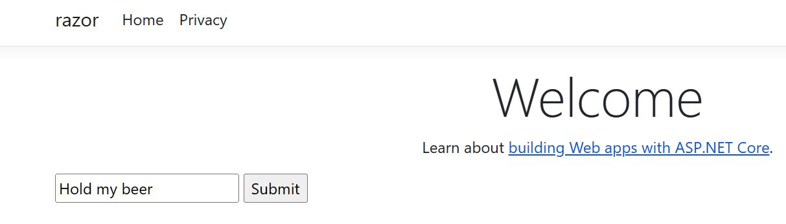
Резултат 2:
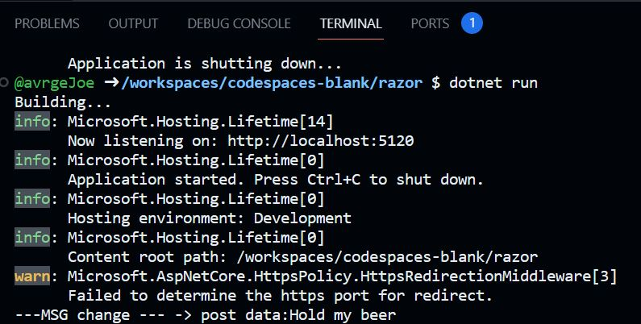
2. SignalR: Ще създадем приложение за онлайн чат, както е показано в това ръководство: Asp NetCore SignalR За целта изпълнете следните команди в Терминал:
@404joe ➜ /workspaces/codespaces-blank $ mkdir chat @404joe ➜ /workspaces/codespaces-blank $ cd chat @404joe ➜ /workspaces/codespaces-blank/chat $ dotnet new webapp @404joe ➜ /workspaces/codespaces-blank/chat $ cd wwwroot @404joe ➜ /workspaces/codespaces-blank/chat/wwwroot $ curl -O https://raw.githubusercontent.com/404joe/csharp/master/_examples/L-8-3-chat-signalr/wwwroot/signalr.js
Следния HTML създава текстови полета и бутон за изпращане. Създава списък с id="messagesList" за показване на съобщения, получени от центъра на SignalR. Включва препратки към скриптове към SignalR и кодът на приложението chat.js
В края на файла /chat/Pages/index.cshtml добавете:
@page
<div class="container">
<div class="row p-1">
<div class="col-1">User</div>
<div class="col-5"><input type="text" id="userInput" /></div>
</div>
<div class="row p-1">
<div class="col-1">Message</div>
<div class="col-5"><input type="text" class="w-100" id="messageInput" /></div>
</div>
<div class="row p-1">
<div class="col-6 text-end">
<input type="button" id="sendButton" value="Send Message" />
</div>
</div>
<div class="row p-1">
<div class="col-6">
<hr />
</div>
</div>
<div class="row p-1">
<div class="col-6">
<ul id="messagesList"></ul>
</div>
</div>
</div>
<script src="signalr.js"></script>
<script src="chat.js"></script>
В директорията /chat/wwwroot създайте файл chat.js:
'use strict';
var connection = new signalR.HubConnectionBuilder().withUrl('/chatHub').build();
//Disable the send button until connection is established.
document.getElementById('sendButton').disabled = true;
connection.on('ReceiveMessage', function (user, message) {
var li = document.createElement('li');
document.getElementById('messagesList').appendChild(li);
// We can assign user-supplied strings to an element's textContent because it
// is not interpreted as markup. If you're assigning in any other way, you
// should be aware of possible script injection concerns.
li.textContent = `${user} says ${message}`;
});
connection.start().then(function () {
document.getElementById('sendButton').disabled = false;
}).catch(function (err) {
return console.error(err.toString());
});
document.getElementById('sendButton').addEventListener('click', function (event) {
var user = document.getElementById('userInput').value;
var message = document.getElementById('messageInput').value;
connection.invoke('SendMessage', user, message).catch(function (err) {
return console.error(err.toString());
});
event.preventDefault();
});
В директорията /chat създайте файл chatHub.cs:
using Microsoft.AspNetCore.SignalR;
namespace SignalRChat.Hubs
{
public class ChatHub : Hub
{
public async Task SendMessage(string user, string message)
{
await Clients.All.SendAsync("ReceiveMessage", user, message);
}
}
}
В Program.cs, добавете следните редове /+++++/
using SignalRChat.Hubs; // +++++
var builder = WebApplication.CreateBuilder(args);
// Add services to the container.
builder.Services.AddRazorPages();
builder.Services.AddSignalR(); // +++++
var app = builder.Build();
// Configure the HTTP request pipeline.
if (!app.Environment.IsDevelopment())
{
app.UseExceptionHandler("/Error");
// The default HSTS value is 30 days. You may want to change this for production scenarios, see https://aka.ms/aspnetcore-hsts.
app.UseHsts();
}
app.UseHttpsRedirection();
app.UseStaticFiles();
app.UseRouting();
app.UseAuthorization();
app.MapRazorPages();
app.MapHub<ChatHub>("/chatHub"); // +++++
app.Run();
В терминал:
@404joe ➜ /workspaces/codespaces-blank/chat $ dotnet run
3. Направете следната таблица на HTML /използвайте HTML атрибутите на тага TABLE rowspan и colspan/ във статичен файл table.html на локалния компютър с Notepad приложението на Windows /или друг текстови редактор/ :
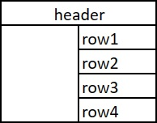
Примерно, започнете така:
<!DOCTYPE HTML>
<html>
<head> </head>
<body>
<table>
<!-- your code here ... -->
</table>
</body>
</html>
IX. Бази Данни × SQL
Бази данни (DB) и системи за управление на бази данни (DBMS)
Стъпки в проектирането на база данни
Ето стъпките в процеса на проектиране на база данни. Всяка стъпка е разгледана по-подробно в останалите раздели на този документ.
Първа стъпка: Определете целта на вашата база данни. Това ще ви помогне да решите кои и какви данни искате да съхранявате.
Стъпка втора: Определете таблиците, от които се нуждаете. След като имате ясна цел за вашата база данни, можете да разделите информацията си на отделни обекти, като например „Служители“ или „Поръчки“. Всеки обект ще бъде таблица във вашата база данни.
Стъпка трета: Определете полетата /колоните/, от които се нуждаете. Решете каква информация искате да запазите във всяка таблица. Всяка категория информация в таблица се нарича поле и се показва като колона в таблицата. Например, едно поле в таблица Служители може да бъде Фамилия; друга може да бъде Дата на наемане на служителя.
Четвърта стъпка: Определете връзките /релациите/ между отделните обекти. Разгледайте всяка таблица и решете как данните в една таблица са свързани с данните в други таблици. Добавете полета към таблиците или създайте нови таблици, за да изясните връзките, ако е необходимо.
Стъпка пета: Усъвършенствайте дизайна си. Анализирайте дизайна си за грешки. Създайте таблиците и добавете няколко записа с примерни данни. Вижте дали можете да получите желаните резултати от вашите таблици. Направете корекции на дизайна, ако е необходимо.
Основи на нормализиацията на базите данни
Тази статия обяснява терминологията на нормализазията на базите данни за начинаещи. Основното разбиране на тази терминология е полезно, когато обсъждаме дизайна на релационна база данни.
Описание на нормализацията
Нормализацията е процес на организиране на данните в база данни. Това включва създаване на таблици и установяване на връзки между тези таблици съгласно правила, предназначени както за защита на данните, така и за по-гъвкава база данни чрез елиминиране на излишъка и непоследователните зависимостти между данните.
Излишните данни заемат излишно дисково пространство и създават проблеми с поддръжката. Ако данни, които съществуват на повече от едно място, трябва да бъдат променени, то данните трябва да бъдат променени по абсолютно същия начин на всички места, където ги има. Промяната на Адреса на клиента е много по-лесна за изпълнение, ако тези данни се съхраняват само в таблицата Клиенти и никъде другаде в базата данни.
Какво е "непоследователна зависимост"? Въпреки че е интуитивно за потребителя да търси в таблицата Клиенти адреса на конкретен клиент, може да няма смисъл да търси там заплатата на служителя, който се обажда на този клиент. Заплатата на служителя е свързана със /или зависи от/ служителя и следователно трябва да бъде преместена в таблицата Служители. Непоследователните зависимости могат да затруднят достъпа до данните, тъй като пътят за намиране на данните може да липсва или да е повреден.
Има няколко правила за нормализиране на базата данни. Всяко правило се нарича "нормална форма". Ако се спазва първото правило, се казва, че базата данни е в „първа нормална форма“. Ако се спазват първите три правила, се счита, че базата данни е в „трета нормална форма“. Въпреки че са възможни други нива на нормализация, третата нормална форма се счита за най-високото ниво, необходимо за повечето приложения.
Както при много официални правила и спецификации, реалните сценарии не винаги позволяват перфектно съответствие. По принцип нормализацията изисква допълнителни таблици и някои разработчици намират това за тромаво. Ако решите да нарушите едно от първите три правила за нормализиране, уверете се, че вашето приложение предвижда всички проблеми, които могат да възникнат, като дублирани данни и непоследователни зависимости.
Първа нормална форма
•Елиминирайте повтарящите се групи в отделните таблици.
•Създайте отделна таблица за всеки набор от свързани данни.
•Идентифицирайте всеки набор от свързани данни с първичен ключ.
Не използвайте множество полета в една таблица за съхраняване на подобни данни. Например, за проследяване на артикул от инвентара, който може да идва от два възможни източника, записът на инвентара може да съдържа полета за Код на доставчик 1 и Код на доставчик 2.
Какво се случва, когато добавите трети доставчик? Добавянето на поле не е отговорът; той изисква модификации на програмата и таблицата и не побира гладко динамичен брой доставчици. Вместо това поставете цялата информация за доставчици в отделна таблица, наречена Доставчици, след което свържете инвентара към доставчиците с ключ за номер на артикул или доставчиците към инвентара с ключ за код на доставчик.
Втора нормална форма
•Създайте отделни таблици за набори от стойности, които се прилагат към множество записи.
•Свържете тези таблици с външен ключ.
Записите не трябва да зависят от нищо друго освен от първичния ключ на таблицата (съставен ключ, ако е необходимо). Например, разгледайте адреса на клиент в счетоводна система. Адресът е необходим за таблицата Клиенти, но също и за таблиците Поръчки, Доставка, Фактури, Вземания и Колекции. Вместо да съхранявате адреса на клиента като отделен запис във всяка от тези таблици, запазете го на едно място или в таблицата Клиенти, или в отделна таблица Адреси.
Трета нормална форма
•Елиминирайте полетата, които не зависят от ключа.
Стойностите в запис, които не са част от ключа на този запис, не принадлежат към таблицата. Като цяло, всеки път, когато съдържанието на група от полета може да се отнася за повече от един запис в таблицата, обмислете поставянето на тези полета в отделна таблица.
Например в таблица за набиране на служители името и адресът на университета на кандидата може да бъдат включени. Но имате нужда от пълен списък с университети за групови писма. Ако информацията за университета се съхранява в таблицата с кандидати, няма начин да се изброят университети без настоящи кандидати. Създайте отделна таблица с университети и я свържете с таблицата с кандидати с ключ на кода на университета.
ИЗКЛЮЧЕНИЕ: Придържането към третата нормална форма, макар и теоретично желателно, не винаги е практично. Ако имате таблица Клиенти и искате да елиминирате всички възможни зависимости между полета, трябва да създадете отделни таблици за градове, пощенски кодове, търговски представители, класове клиенти и всеки друг фактор, който може да се дублира в множество записи. На теория подобно нормализиране си заслужава да се преследва. Много малки таблици обаче могат да влошат производителността или да надхвърлят капацитета на отворения файл и паметта.
Може да е по-осъществимо да се приложи трета нормална форма само към данни, които се променят често. Ако някои зависими полета останат, проектирайте приложението си така, че да изисква потребителят да проверява всички свързани полета, когато някое от тях бъде променено.
Други нормални форми
Четвъртата нормална форма, наричана още нормална форма на Бойс Код (BCNF), и петата нормална форма съществуват, но рядко се разглеждат в практическия дизайн. Пренебрегването на тези правила може да доведе до по-малко от перфектния дизайн на базата данни, но не трябва да засяга функционалността.
Нормализиране на примерна таблица
Тези стъпки демонстрират процеса на нормализиране на фиктивна студентска таблица.
0. Ненормализирана таблица:
| Student# | Advisor | Adv-Room | Class1 | Class2 | Class3 |
|---|---|---|---|---|---|
| 1022 | Jones | 412 | 101-07 | 143-01 | 159-02 |
| 4123 | Smith | 216 | 101-07 | 143-01 | 179-04 |
1. Първа нормална форма: Без повтарящи се групи /Колони, които съдържат едно и също, т.е. без повторения във хоризонтала/
Таблиците трябва да имат само две измерения. Тъй като един студент участва в няколко класа, тези класове трябва да бъдат изброени в отделна таблица. Полетата Class1, Class2 и Class3 в горните записи са индикации за проблем с дизайна.
Електронните таблици /като Excel/ често използват трето измерение, но таблиците в базите данни не трябва. Друг начин да разгледате този проблем е с релация "един към много", не поставяйте страната на едния, и страната на многото в една и съща таблица. Вместо това създайте друга таблица в първата нормална форма, като елиминирате повтарящата се група (Class#), както е показано по-долу:
| Student# | Advisor | Adv-Room | Class# |
|---|---|---|---|
| 1022 | Jones | 412 | 101-07 |
| 1022 | Jones | 412 | 143-01 |
| 1022 | Jones | 412 | 159-02 |
| 4123 | Smith | 216 | 101-07 |
| 4123 | Smith | 216 | 143-01 |
| 4123 | Smith | 216 | 179-04 |
2. Втора нормална форма: Елиминирайте излишните данни /без повторения във вертикала, т.е. в дедена колона да няма 2 еднакви записа/
Обърнете внимание на множеството стойности на Class# за всяка стойност на Student# в горната таблица. Class# не е функционално зависим от Student# (първичен ключ), така че тази връзка не е във втора нормална форма.
Следните таблици демонстрират втората нормална форма:
Таблица Студенти:
| Student# | Advisor | Adv-Room |
|---|---|---|
| 1022 | Jones | 412 |
| 4123 | Smith | 216 |
Таблица Регистрации /Релация много-към-много/
| Student# | Class# |
|---|---|
| 1022 | 101-07 |
| 1022 | 143-01 |
| 1022 | 159-02 |
| 4123 | 101-07 |
| 4123 | 143-01 |
| 4123 | 179-04 |
3. Трета нормална форма: Елиминиране на данни, които не зависят от ключа
В горния пример Adv-Room (номерът на офиса на преподавателя) е функционално зависим от атрибута Advisor. Решението е да преместите този атрибут от таблицата Students в таблицата Faculty, както е показано по-долу:
Таблица Студенти
| Student# | Advisor |
|---|---|
| 1022 | Jones |
| 4123 | Smith |
Таблица Регистрации
| Student# | Class# |
|---|---|
| 1022 | 101-07 |
| 1022 | 143-01 |
| 1022 | 159-02 |
| 4123 | 101-07 |
| 4123 | 143-01 |
| 4123 | 179-04 |
Таблица Факултети
| Name | Room | Dept |
|---|---|---|
| Jones | 412 | 42 |
| Smith | 216 | 42 |
Основи на SQL
SQL /Structured Query Language/ е език за програмиране със специално предназначение, предназначен за управление на данни, съхранявани в система за управление на релационни бази данни (RDBMS), или за поточна обработка в система за управление на релационни потоци от данни ( RDSMS).
Типове данни
Всяка колона в дадена SQL таблица има типа на данните, които тази колона може да съдържа. ANSI SQL включва следните типове данни.[25]
• Символен низ - VARCHAR(n): низ с променлива ширина с максимален размер от n знака; например: "Низ това е низ"; "Hold my beer"; и други;
• Числа: INTEGER - цяло число /25; 320; -3117; ... / или DOUBLE PRECISION - дробно число /3.14; 2.73; -1348.6755; ... /
• Дата и час: TIMESTAMP - например: '5-25-2023'; '14-01-2014'; ...
Създаване на таблици
Дефиниране на данни Езикът за дефиниране на данни (DDL) управлява структурата на таблицата и индекса. Основните команди на DDL са инструкциите CREATE, ALTER и DROP:
CREATE създава обект (например таблица) в базата данни, напр.:
CREATE TABLE Faculty(
Name VARCHAR(50),
Room INTEGER,
Dept INTEGER
);
ALTER променя структурата на съществуващ обект по различни начини, например добавяне на колона към съществуваща таблица, напр.:
ALTER TABLE Faculty ADD AdvRoom INTEGER;
DROP изтрива обект в базата данни, обикновено безвъзвратно, т.е. не може да бъде възстановен, напр.:
DROP TABLE Faculty;
Вмъкване на данни в таблици - Data Manipulation Language
Манипулиране на данни
Езикът за манипулиране на данни (DML) е подмножеството на SQL, използвано за добавяне, актуализиране и изтриване на данни:
INSERT INTO Faculty (Advisor, AdvRoom, Dept)
VALUES ('Jones', 412, 42);
Вмъква нов запис (ред) в таблицата Факултет.
Актуализиране на таблици
UPDATE променя набор от съществуващи редове на таблица, напр.:
UPDATE Faculty SET Advisor='James Jones' WHERE AdvRoom=412;
Актуализира таблицата Faculty, като установява стойността на клетките в колоната Advisor на „James Jones“, на всички редове, които имат стойност 412 в колоната AdvRoom.
Извличане на данни от таблици на БД
Queries - заявки
Най-често срещаната операция в SQL е заявката, която се изпълнява с декларативния оператор SELECT. SELECT извлича данни от една или повече таблици или изрази. Стандартните оператори SELECT нямат постоянни ефекти върху базата данни.
Заявките позволяват на потребителя да описва желаните данни, оставяйки системата за управление на база данни (СУБД) отговорна за планирането, оптимизирането и извършването на физическите операции, необходими за получаване на този резултат, който е описан от заявката.
Заявката включва списък с колони за включване в крайния резултат, непосредствено след ключовата дума SELECT. Звездичка ("*") може също да се използва, за да се укаже, че заявката трябва да върне всички колони на заявените таблици. SELECT е най-сложният израз в SQL, с незадължителни ключови думи и клаузи, които включват:
• Клаузата FROM, която указва таблицата(ите), от която да се извличат данни. Клаузата FROM може да включва незадължителни подклаузи JOIN за указване на правилата за свързване на таблици.
• Клаузата WHERE включва предикат /клауза/ за сравнение, който ограничава редовете, върнати от заявката. Клаузата WHERE елиминира всички редове от набора с резултати, където предикатът за сравнение не се оценява на True.
• Клаузата GROUP BY се използва за проектиране на редове с общи стойности в по-малък набор от редове. GROUP BY често се използва във връзка с функциите за агрегиране на SQL /SUM - сума; AVERAGE - средно аритметично/ или за премахване на дублиращи се редове от набор от резултати. Клаузата WHERE се прилага преди клаузата GROUP BY.
• Клаузата HAVING включва предикат, използван за филтриране на редове, когато се използва и клаузата GROUP BY. Тъй като действа върху резултатите от клаузата GROUP BY, функциите за агрегиране могат да се използват в предиката на клаузата HAVING /например: SELECT ... HAVING SUM(PRICE) > 20 /.
• Клаузата ORDER BY идентифицира кои колони да използвате за сортиране на получените данни и в каква посока да ги сортирате (възходящо - ASC или низходящо - DESC). Без клауза ORDER BY, подредбата на редовете, върнат от SQL заявка, е недефиниран.
Следното е пример за заявка SELECT, която връща списък с учители в 42 департамент от таблицата Факултети. Заявката извлича всички редове от таблицата Faculty, в която колоната Dept съдържа стойност, равна на 42. Резултатът се сортира във възходящ ред по име на Advisor. Звездичката (*) в списъка за избор показва, че всички колони от таблицата на факултета трябва да бъдат включени в набора с резултати.
SELECT * FROM Faculty WHERE Dept = 42 ORDER BY Advisor
Резултата от заявката е следната таблица:
| Advisor | AdvRoom | Dept |
|---|---|---|
| Jones | 412 | 42 |
| Smith | 216 | 42 |
WHERE Предикати in; between; like; null; exists
Тези предикати се използват най-вече в клаузата WHERE и включват:
| Оператор | Описание | Пример |
|---|---|---|
| = | Равно на | WHERE Author = 'Alcott' |
| <> | Различно (много DBMS приемат != в добавка на<>) | WHERE Dept <> 'Sales' |
| > | По-голямо от | WHERE Hire_Date > '2012-01-31' |
| < | По-малко от | WHERE Bonus < 50000.00 |
| >= | По-голямо или равно | WHERE Dependents >= 2 |
| <= | По-малко или равно | WHERE Rate <= 0.05 |
| BETWEEN | Между 2 стойности, включително | WHERE Cost BETWEEN 100.00 AND 500.00 |
| LIKE | Дали символен низ съвпада с друг | WHERE First_Name LIKE 'Will%' |
| IN | Рано на една от няколко възможни изброени стойности | WHERE DeptCode IN (101, 103, 209) |
| IS / IS NOT | Сравнява с NULL (липсващи данни) | WHERE Address IS NOT NULL |
| IS NOT DISTINCT FROM | Дали е равно на стойност, или и двете са със съойност NULL (липсващи данни) | WHERE Debt IS NOT DISTINCT FROM - Receivables |
| AS | Промяна на името на полето /колоната/ в получения резултат | SELECT employee AS 'department1' |
| UNION и UNION ALL | Снажда две таблици, от SQL1 и SQL2, като добавя таблицата от SQL2 след таблицата ot SQL1. SQL1 и SQL2 трябва да връщат еднакъв брой колони | SELECT_SQL1 UNION/UNION ALL SELECT_SQL2 |
Забелжка за LIKE: LIKE може да се ползва с % или с *.
• * означава, че ще бъдат извлеччени резултати с всеки еденичен знак на мястото на *-та /например SELECT ... LIKE "Joh*" ➜ връща записи, които съдържат "John" , но не "Johanson", нито "Joh" /;
• % - ще бъдат извлечени резултати с всички множествени знаци на мястото на %-та /например SELECT ... LIKE "Joh%" ➜ връща записи, които съдържат и "John" и "Johanson" и "Joh" /.
Клаузата OR или AND е логически оператор в SQL, който ви позволява да комбинирате множество условия. Обикновено се използва в клаузата WHERE, за да се укаже, че даден ред трябва да бъде включен в набора от резултати, ако поне едно от условията WHERE е оценено като true.
SELECT * FROM table_name WHERE condition1 OR/AND condition2;
Моля, обърнете внимание, че клаузата OR/AND може да се използва в различни клаузи на SQL, като WHERE, HAVING, JOIN, LIKE, CASE, EXISTS и в комбинация с операторите UNION и UNION ALL за комбиниране на резултатите от заявката.
COALESCE При LIKE може да се използва и така наречерната колация /collations/, които правят възможно сравняването на низове с различна големина на буквите - наприомер John със john. Те могат да бъдат реализирани чрез клаузата COALESCE, или по друг начин в зависимост от конретната СУБД.
Съединения /JOIN/
Примерът по-долу демонстрира заявка за съединяване на множество таблици по релация /с клаузата JOIN/, като връща списък на всички регистрации и информация за съветници, свързани с всеки запис:
SELECT Registration.Student, Registration.Class,
Students.Advisor,
Faculty.AdvRoom, Faculty.Dept
FROM Registration
JOIN Students on Registration.Student = Students.Student
JOIN Facuty on Facuty.Advisor = Students.Advisor
ORDER BY Registration.Student
Примерения резултат може да прилича на следното:
| Student | Class | Advisor | AdvRoom | Dept |
|---|---|---|---|---|
| 1022 | 101-07 | Jones | 412 | 42 |
| 1022 | 143-01 | Jones | 412 | 42 |
| 1022 | 159-02 | Jones | 412 | 42 |
| 4123 | 201-01 | Smith | 216 | 42 |
| 4123 | 211-02 | Smith | 216 | 42 |
| 4123 | 214-01 | Smith | 216 | 42 |
В SQL има няколко типа съединения, които ви позволяват да комбинирате данни от множество таблици въз основа на общи колони /релации/. Ето кратко обяснение на основните типове присъединявания:
• INNER JOIN: Вътрешното съединение връща само редовете, които имат съвпадащи стойности в двете таблици. Той комбинира ред от едната таблица с ред от другата в нов ред в резултата на основа на определеното условие за свързване. Ако в заявката пише само JOIN, то това е JOIN-а който се изпълнява по подразбиране.
• LEFT JOIN: Лявото съединение връща всички редове от лявата таблица и съответстващите редове от дясната таблица. Ако няма съвпадения, пак ще върне всички редове от лявата таблица и ще замени липсващите стойности с NULL.
• RIGHT JOIN: Дясното съединение е подобно на лявото съединение, но връща всички редове от дясната таблица и съответстващите редове от лявата таблица. Ако няма съвпадения, той пак ще върне всички редове от дясната таблица и ще замени липсващите стойности с NULL.
• FULL JOIN: Пълното обединяване, известно още като пълно външно обединяване, връща всички редове както от лявата, така и от дясната таблица. Ако има съвпадащи редове, той ги комбинира в един ред. Ако няма съвпадения, включва NULL стойности за колоните от несъвпадащата таблица.
• CROSS JOIN:Кръстосаното съединение, известно още като Декартово съединение / Cartesian join/, връща декартовото произведение на двете таблици, т.е. всички възможни комбинации от редове от двете таблици.
Това са основните типове съединения в SQL, които ви позволяват да комбинирате данни от множество таблици въз основа на различни условия.
Функции
SQL е предназначен за конкретна цел: да прави заявки върху данни, съдържащи се в релационна база данни. SQL е базиран на множествен, декларативен език за заявки, а не е императивен език като C или BASIC. Въпреки това, разширенията към стандартния SQL добавят функционалност с която може да се добави потребителска функция /Stored Procedures/, или изгледи на данни /View/.
Задачи Бази данни
В Codespaces / Terminal:
1. Създаване на база данни в директория sql:
@404joe ➜ /workspaces/codespaces-blank $ mkdir sql
@404joe ➜ /workspaces/codespaces-blank $ cd sql
Добавяне на .NET поддръжка за SQLite :
@404joe ➜ /workspaces/codespaces-blank/sql $ dotnet add package system.data.sqlite
Създаване на база данни и отварянето и
@404joe ➜ /workspaces/codespaces-blank/sql $ sqlite3 'students_db.db'
Изпълнете следните SQL команди:
/*Създаване на таблица Students*/
CREATE TABLE Students (
StudentID INTEGER,
Advisor TEXT
);
/*Създаване на записи за студенти в таблица Students */
INSERT INTO Students (StudentID, Advisor)
VALUES
(1022,'Jones'),
(4123,'Smith');
/*Създаване на таблица Faculty*/
CREATE TABLE Faculty (
Name TEXT,
Room INTEGER,
Dept INTEGER
);
/*Създаване на записи в таблица Faculty */
INSERT INTO Faculty (Name, Room, Dept)
VALUES
('Jones', 412, 42),
('Smith', 216, 42);
/*Създаване на таблица Registration*/
CREATE TABLE Registration (
StudentID INTEGER,
ClassID TEXT
);
/*Създаване на записи в таблица Registration */
INSERT INTO Registration (StudentID, ClassID)
VALUES
(1022,'101-07'),
(1022,'143-01'),
(1022,'159-02'),
(4123,'101-07'),
(4123,'143-01'),
(4123,'179-04');
Заявка за извличане на всички данни /с имена на клони - headers, и табличен вид - column/ :
.headers ON .mode column SELECT Registration.StudentID, Registration.ClassID, Students.Advisor, Faculty.Room, Faculty.Dept FROM Registration JOIN Students on Registration.StudentID = Students.StudentID JOIN Faculty on Faculty.Name = Students.Advisor ORDER BY Registration.StudentID
Резултат:
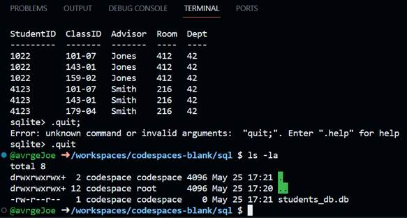
.quit за изход от sqlite3
Задачи
3. Извличане на записи от SQLite БД в C# програма
NuGet install:
@404joe ➜ /workspaces/codespaces-blank $ mkdir sql_console @404joe ➜ /workspaces/codespaces-blank $ cd sql_console @404joe ➜ /workspaces/codespaces-blank/sql_console $ dotnet new console @404joe ➜ /workspaces/codespaces-blank/sql_console $ dotnet add package system.data.sqlite
Заместете съдържанието на файла Program.cs със следното
using System;
using System.Data.SQLite;
string connectionString = "Data Source=../sql/students_db.db";
using (SQLiteConnection connection = new SQLiteConnection(connectionString))
{
connection.Open();
// Изпълняване на SELECT SQL заявка, и обработка на резултата
// Знака @ поставен "пред символен низ показва,
// че низа се пренася на няколко реда: до следващата кавичка "
string sql = @" SELECT Registration.StudentID, Registration.ClassID,
Students.Advisor, Faculty.Room, Faculty.Dept
FROM Registration
JOIN Students on Registration.StudentID = Students.StudentID
JOIN Faculty on Faculty.Name = Students.Advisor
ORDER BY Registration.StudentID ; ";
using (SQLiteCommand command = new SQLiteCommand(sql, connection))
{
using (SQLiteDataReader reader = command.ExecuteReader())
{
while (reader.Read())
{
// Access the result values using reader["column_name"]
var column1Value = reader["Advisor"];
var column2Value = reader["Room"];
// Process the data as needed
Console.WriteLine($"{column1Value} | {column2Value} ");
}
}
}
}
X. C# WebApp × SQL Бази Данни
WEBAPP × RAZOR PAGES /SSR/
Идеята на следното занимание е да изпълним заявка към базата със SQL SELECT който връща таблица, да вземем тази таблица, и да генерираме от нея HTML код на таблица /HTML тагове/, която да върнем на посетителя, като готов HTML /приготвен на сървъра и върнат на клиента/. Това е познато като SSR - Рендерирането от страна на сървъра. За целата в Pages/index.cshtml.cs трябва да се добави 1. Заявка към базата, която връща резултат; 2. Да попълним 2 масива - Cols - имената на колоните - едномерен, и Rows - съдържанието на самата таблица - двумерен, и двата от тип символен низ /string/. След това те /Cols и Rows/ ще могат да се използват в HTML шаблона на страницата, при неговото рендериране /генериране/ на WEB сървъра. Ако се направи GET заявка от Web браузъра към някакъв адрес, например, https://www.somehost.com/ , то WEB сървъра на този хост по подразбиране връща файла index.html . Ако заявката обаче е към https://www.somehost.com/Privacy.html , то WEB сървъра връща файла Privacy.html
@404joe ➜ /workspaces/codespaces-blank $ mkdir sql_webapp @404joe ➜ /workspaces/codespaces-blank $ cd sql_webapp @404joe ➜ /workspaces/codespaces-blank/sql_webapp $ dotnet new webapp @404joe ➜ /workspaces/codespaces-blank/sql_webapp $ dotnet add package Microsoft.Data.Sqlite
В /sql_webapp/Pages/index.cshtml.cs променте :
using Microsoft.AspNetCore.Mvc;
using Microsoft.AspNetCore.Mvc.RazorPages;
using Microsoft.Data.Sqlite; // + добавете този ред
namespace sql_webapp.Pages;
public class IndexModel : PageModel
{
public List<string> Cols { get; set; } = new List<string>(); // да подадем към .cshtml
public List<List<string>> Rows { get; set; } = new List<List<string>>(); // да подадем към .cshtml
public void OnGet() // OnGet метода се вика при заявка към index.html
{
// ++++ добавете следното
string connectionString = "Data Source=../sql/students_db.db";
using (var connection = new SqliteConnection(connectionString))
{
connection.Open();
string sql = @" SELECT Registration.StudentID,
Registration.ClassID,
Students.Advisor,
Faculty.Room, Faculty.Dept
FROM Registration
JOIN Students on Registration.StudentID = Students.StudentID
JOIN Faculty on Faculty.Name = Students.Advisor
ORDER BY Registration.StudentID ; ";
using (var command = new SqliteCommand(sql, connection))
{
using (var reader = command.ExecuteReader())
{
Cols = new List<string>();
Rows = new List<List<string>>();
// имена на колони
for (int i = 0; i < reader.FieldCount; i++)
{
Cols.Add(reader.GetName(i));
}
// редове
while (reader.Read())
{
var row = new List<string>();
for (int i = 0; i < reader.FieldCount; i++)
{ // ! ➜ null forgiving operator
row.Add(reader[i].ToString() ! );
}
Rows.Add(row);
}
}
}
} // до тук
}
}
В /sql_webapp/Pages/index.cshtml се намира HTML шаблона на страницата, която ще бъде превърната в HTML, и върната при заявка от WEB browsera /В случая index.cshtml/. Променливите Cols и Rows са достъпни при генериране на HTML таговете за таблица. Достъпват се чрез Model.Cols и Model.Rows от .cshtml файла /HTML шаблона/. Използва се оператор @foreach за обхождане на двата масива.
В /sql_webapp/Pages/index.cshtml най долу във файла добавете:
<!-- ADD FOLLOWING LINES FOR SQLITE × RAZOR PAGES table tag DEMO -->
<table>
<thead> <!-- thead таг - table header -->
<tr> <!-- tr таг - table row -->
@foreach (var column in Model.Cols)
{
<!-- генериране на тагове th - table header -->
<th>@column</th>
}
</tr>
</thead>
<tbody> <!-- tbody таг - table body -->
@foreach (var row in Model.Rows)
{
<tr>
@foreach (var value in row)
{
<td>@value</td>
}
</tr>
}
</tbody>
</table>
В Terminal: dotnet run
Генерирания HTML от: SQL заявката + данните в базата + и cshtml шаблона, който бива вграден във върнатата на WEB броузъра страница index.html изглежда по следния начин:
<table>
<thead>
<tr>
<th>StudentID</th>
<th>ClassID</th>
<th>Advisor</th>
<th>Room</th>
<th>Dept</th>
</tr>
</thead>
<tbody>
<tr>
<td>1022</td>
<td>101-07</td>
<td>Jones</td>
<td>412</td>
<td>42</td>
</tr>
<tr>
<td>1022</td>
<td>143-01</td>
<td>Jones</td>
<td>412</td>
<td>42</td>
</tr>
<tr>
<td>1022</td>
<td>159-02</td>
<td>Jones</td>
<td>412</td>
<td>42</td>
</tr>
<tr>
<td>4123</td>
<td>101-07</td>
<td>Smith</td>
<td>216</td>
<td>42</td>
</tr>
<tr>
<td>4123</td>
<td>143-01</td>
<td>Smith</td>
<td>216</td>
<td>42</td>
</tr>
<tr>
<td>4123</td>
<td>179-04</td>
<td>Smith</td>
<td>216</td>
<td>42</td>
</tr>
</tbody>
</table>
във WEB броузъра:
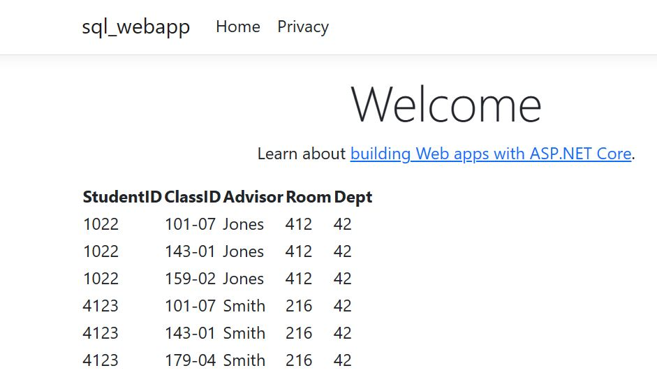
Така и така горния пример стана доста дълъг, но можем да го усложним още малко. В файла /sql_webapp/Pages/index.cshtml променете тага за таблица : <table>, като добавите Bootstrap CSS class към таблицата по следния начин:
<table class='table'>
Резултат:

Предимствата на Bootstrap са че може наготово да използвате CSS стилове, като търсите тага върху който искате да приложите CSS стил в сайта на Bootstrap, и добавите класа към съответния таг, недостатък е че много трудно се променят някои малки аспекти от дадена CSS библиотека.
WEBAPP × JSON × VUE.JS
Рендерирането от страна на сървъра (SSR) /по-горе/ и AJAX с JSON и Vue.js /CSR/ са два различни подхода за изграждане на уеб приложения.
Рендериране от страна на сървъра (SSR):
SSR е по-бавен за последващи първоначалното зареждане взаимодействия, тъй като изисква двупосочно пътуване до сървъра и за всяко действие се генерират големи HTML документи.
AJAX + JSON + Vue.js /CSR/
CSR /Client Side Rendering/, зарежда първоначалния HTML шаблон и JavaScript от сървъра в броузера а след това използва AJAX (Асинхронен JavaScript и XML) заявки за извличане на JSON данни от сървъра /чрез JSON api Endpoint/. След това, вече във браузера, генерира HTML съдържание и го изобразява.
JSON данните се използват за динамично актуализиране на потребителския интерфейс.
Vue.js е популярна JavaScript платформа, която осигурява мощно обвързване на данни и шаблони, и е базирана на преизползваеми компоненти.
AJAX заявките позволяват на приложението да извлича данни от сървъра асинхронно, без да презарежда цялата страница.
Основното предимство на този подход /CSR/ е по-интерактивно и отзивчиво потребителско изживяване, тъй като приложението може да актуализира определени части от страницата без пълно ѝ презареждане.
Мащабируемост: Чрез разтоварване на обработката на данни към клиента, CSR може да намали натоварването на сървъра и да подобри мащабируемостта на приложението.
Разделяне на проблемите: С CSR можете да разделите логиката за извличане и рендиране на данни, което позволява по-чиста организация и поддръжка на кода.
Api Endpoint - Крайна точка за AJAX заявка; връща JSON символен низ, генериран на сървъра, като следния:
[{"StudentID":1022,"ClassID":"101-07","Advisor":"Jones","Room":412,"Dept":42},
{"StudentID":1022,"ClassID":"143-01","Advisor":"Jones","Room":412,"Dept":42},
{"StudentID":1022,"ClassID":"159-02","Advisor":"Jones","Room":412,"Dept":42},
{"StudentID":4123,"ClassID":"101-07","Advisor":"Smith","Room":216,"Dept":42},
{"StudentID":4123,"ClassID":"143-01","Advisor":"Smith","Room":216,"Dept":42},
{"StudentID":4123,"ClassID":"179-04","Advisor":"Smith","Room":216,"Dept":42}]
Първо да създадем ново приложение:
@404joe ➜ /workspaces/codespaces-blank $ mkdir ajax @404joe ➜ /workspaces/codespaces-blank $ cd ajax @404joe ➜ /workspaces/codespaces-blank/ajax $ dotnet new web
В Program.cs добавете мапинг на JSON крайните точки /статичен файл https://somehost.com/index.html и api endpoint https://somehost.com/api/MyJSON /:
var builder = WebApplication.CreateBuilder(args);
builder.Services.AddRazorPages();
var app = builder.Build();
app.UseRouting();
// Map JSON api
app.UseEndpoints(endpoints =>
{
endpoints.MapControllers();
});
// Map index.html
app.UseDefaultFiles();
app.UseStaticFiles();
app.Run(async context =>
{
await context.Response.SendFileAsync("index.html");
});
app.Run();
Api Endpoint, достъпен в последствие на адрес: https://someserver.com/api/MyJSON, запишете следното във файла /ajax/Pages/JSON.cs
using Microsoft.AspNetCore.Mvc;
using System.Text.Json;
namespace YourNamespace
{
[ApiController]
[Route("api/[controller]")]
public class MyJSON : ControllerBase
{
[HttpGet]
public IActionResult Get()
{
string jsonRes = // "" -> в C# се пише "", в браузера излиза " / " escaping /
@"[{""StudentID"":1022,""ClassID"":""101-07"",""Advisor"":""Jones"",""Room"":412,""Dept"":42},
{""StudentID"":1022,""ClassID"":""143-01"",""Advisor"":""Jones"",""Room"":412,""Dept"":42},
{""StudentID"":1022,""ClassID"":""159-02"",""Advisor"":""Jones"",""Room"":412,""Dept"":42},
{""StudentID"":4123,""ClassID"":""101-07"",""Advisor"":""Smith"",""Room"":216,""Dept"":42},
{""StudentID"":4123,""ClassID"":""143-01"",""Advisor"":""Smith"",""Room"":216,""Dept"":42},
{""StudentID"":4123,""ClassID"":""179-04"",""Advisor"":""Smith"",""Room"":216,""Dept"":42}]";
return Ok(jsonRes); // Console.WriteLine(jsonRes);
}
}
}
Резултат:
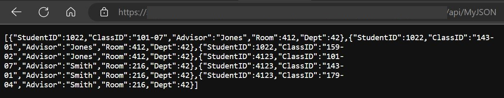
Създайте файла /ajax/wwwroot/index.html добавете HTML Vue.js шаблона + клиентския код, за заявка към JSON API endpoint /на javascript + vue.js/:
<!DOCTYPE HTML>
<html>
<head> </head>
<body>
<div v-scope id='json_tbl_target' @vue:mounted='app.mounted'>
<button @click='app.search()'>Make AJAX Call</button>
<table>
<thead>
<tr>
<th>Student ID</th>
<th>Class ID</th>
<th>Advisor</th>
<th>Room</th>
<th>Dept</th>
</tr>
</thead>
<tbody>
<tr v-for='item in app.results'>
<td>{{ item.StudentID }}</td>
<td>{{ item.ClassID }}</td>
<td>{{ item.Advisor }}</td>
<td>{{ item.Room }}</td>
<td>{{ item.Dept }}</td>
</tr>
</tbody>
</table>
</div>
<script src='https://unpkg.com/petite-vue'></script>
<script>
const app = new PetiteVue.reactive({
el: '#json_tbl_target',
results: '',
async search() {
const StudentsData = await fetch('/api/MyJSON')
this.results = await StudentsData.json()
console.log(this.results)
},
mounted() {
console.log('mounted')
this.search()
}
});
PetiteVue.createApp({app}).mount('#json_tbl_target')
</script>
</body>
</html>
Резултат:
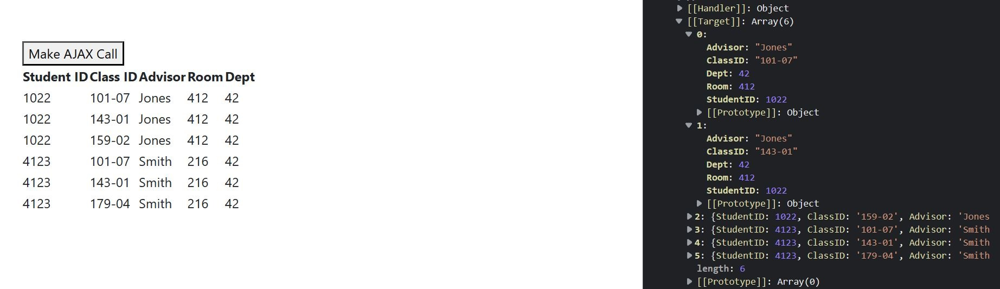
За повече информация, посетете: Petite Vue.js